Every examples/extras/*_demo.py script registered in examples/extras/manifest.yml, with the figure outputs each demo produces (when applicable) and a short description of what every figure shows. Auto-generated from tools/extras_build/extras_descriptions.yml — re-render with python tools/extras_build/build_extras_gallery.py after editing the descriptions.
Question: Does a continuous LTI stimulus filter integrated with scipy.signal.lsim reproduce closed-form linear-systems-theory filtering, and does a nonzero continuous self-history feedback filter measurably regularize spiking relative to no history?
Goal: Confirm the continuous LTI realization matches known filter theory (the numerically realised ``scipy.signal.lsim`` drive agrees with the closed-form steady-state sinusoidal response once the initial transient dies out), and confirm the nonzero continuous self-history filter produces the expected qualitative refractory signature: a lower interspike-interval coefficient of variation relative to the same drive with no self-history feedback.
Native-Python port of the MATLAB Simulink model ``PointProcessSimulationCont.slx`` (:func:`nstat.extras.continuous_cif.simulate_cif_continuous`). A single simulated cortical unit's firing probability is driven by a slow 1 Hz oscillatory "LFP" stimulus, filtered through a continuous first-order lowpass synaptic filter ``S(s) = K/(tau*s + 1))`` integrated with ``scipy.signal.lsim`` -- continuous-time filtering, not a discrete pre-sampled sequence. Independently, the unit carries an inhibitory continuous self-history filter ``H(s) = -G/(tau_h*s + 1)`` modeling post-spike refractoriness as a continuous decay rather than a fixed-bin dead time. Two runs share the exact same injected ``U(0,1)`` variates -- one with ``H = 0``, one with the nonzero inhibitory ``H`` -- so any difference in the realised spike train is attributable to ``H`` alone.
Run: python examples/extras/continuous_cif_demo.py --export-figures · Script
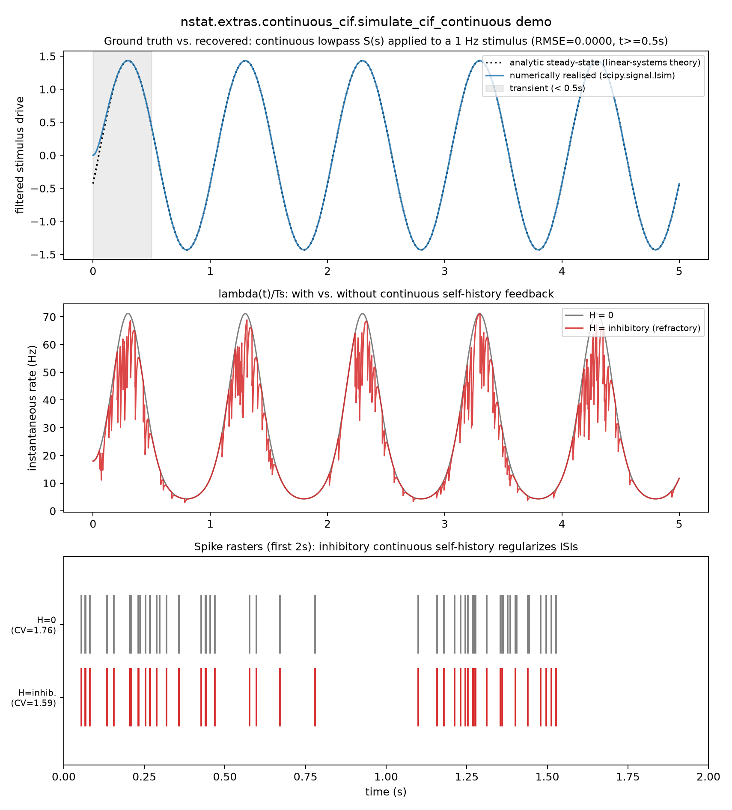
fig, axes = plt.subplots(3, 1, figsize=(9.5, 10.5))
ax0 = axes[0]
ax0.plot(t, analytic_drive, color="black", lw=1.6, ls=":",
label="analytic steady-state (linear-systems theory)")
ax0.plot(t, result_zero.stim_drive, color="tab:blue", lw=1.4, alpha=0.85,
label="numerically realised (scipy.signal.lsim)")
ax0.axvspan(0.0, BURN_IN_S, color="gray", alpha=0.15, label=f"transient (< {BURN_IN_S:.1f}s)")
ax0.set_ylabel("filtered stimulus drive")
ax0.set_title(
"Ground truth vs. recovered: continuous lowpass S(s) applied to a "
f"{F_STIM_HZ:.0f} Hz stimulus (RMSE={ground_truth_rmse:.4f}, t>={BURN_IN_S:.1f}s)",
fontsize=10,
)
ax0.legend(loc="upper right", fontsize=8)
ax1 = axes[1]
ax1.plot(t, result_zero.rate_hz, color="tab:gray", lw=1.2, label="H = 0")
ax1.plot(t, result_hist.rate_hz, color="tab:red", lw=1.2, alpha=0.85,
label="H = inhibitory (refractory)")
ax1.set_ylabel("instantaneous rate (Hz)")
ax1.set_title("lambda(t)/Ts: with vs. without continuous self-history feedback", fontsize=10)
ax1.legend(loc="upper right", fontsize=8)
ax2 = axes[2]
show_t = 2.0
show_zero = result_zero.spikes.spikeTimes
show_hist = result_hist.spikes.spikeTimes
ax2.eventplot(show_zero[show_zero <= show_t], lineoffsets=1.0, linelengths=0.8,
colors="tab:gray")
ax2.eventplot(show_hist[show_hist <= show_t], lineoffsets=0.0, linelengths=0.8,
colors="tab:red")
ax2.set_yticks([0.0, 1.0])
ax2.set_yticklabels([f"H=inhib.\n(CV={cv_hist:.2f})", f"H=0\n(CV={cv_zero:.2f})"], fontsize=8)
ax2.set_xlim(0.0, show_t)
ax2.set_xlabel("time (s)")
ax2.set_title(
f"Spike rasters (first {show_t:.0f}s): inhibitory continuous self-history "
"regularizes ISIs", fontsize=10,
)Question: Can we decode kinematics/position from unsorted multiunit events + waveform marks, and does clusterless decoding match/beat sorted decoding as sorting quality degrades?
Goal: Answer the motor/hippocampal decoding question directly: does clusterless decoding match or beat sorted decoding as sorting degrades? The clusterless decoder degrades gracefully (it never used unit identity in the first place) while the sorted comparator holds up at low sort-error rates and then collapses once corrupted labels dominate — filling the Tier 2.1 gap in ``parity/methods_roadmap.md`` with a concrete clusterless-vs-sorted robustness story rather than a bare bridge smoke test.
Four place-/kinematic-tuned units ride a synthetic 1-D back-and-forth trajectory and emit **unsorted** multiunit events on a single tetrode: which unit generated a given event is ambiguous, and its 4-channel waveform mark is drawn from overlapping per-unit clusters (Kloosterman 2014; Deng 2015). ``fit_clusterless_decoder`` decodes position directly from the never-sorted marks (Denovellis 2021, eLife) exactly once, since its accuracy cannot depend on spike-sorting quality. A comparator built from the same upstream library's ``SortedSpikesDecoder`` then decodes from spike trains whose true unit-identity labels are corrupted at a tunable sort-error rate — a stand-in for cumulative merge/split spike-sorting mistakes — swept from a perfect sort up to fully scrambled labels. Also runs the discrete-state classifier (``fit_clusterless_classifier``).
Run: python examples/extras/decoding_clusterless_demo.py --export-figures · Script
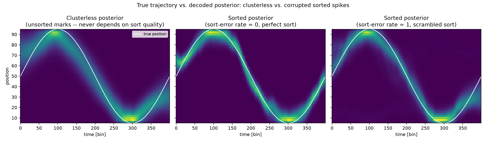
fig, axes = plt.subplots(1, 3, figsize=(15.0, 4.4), sharey=True)
axes[0].pcolormesh(
t_axis, comparison["cl_bin_centers"], comparison["cl_posterior"].T,
shading="auto", cmap="viridis",
)
axes[0].plot(t_axis, position, color="white", lw=1.3, label="true position")
axes[0].set_title("Clusterless posterior\n(unsorted marks -- never depends on sort quality)")
axes[0].set_xlabel("time [bin]")
axes[0].set_ylabel("position")
axes[0].legend(loc="upper right", fontsize=8)
axes[1].pcolormesh(t_axis, bins_low, post_low.T, shading="auto", cmap="viridis")
axes[1].plot(t_axis, position, color="white", lw=1.3)
axes[1].set_title(f"Sorted posterior\n(sort-error rate = {p_low:g}, perfect sort)")
axes[1].set_xlabel("time [bin]")
axes[2].pcolormesh(t_axis, bins_high, post_high.T, shading="auto", cmap="viridis")
axes[2].plot(t_axis, position, color="white", lw=1.3)
axes[2].set_title(f"Sorted posterior\n(sort-error rate = {p_high:g}, scrambled sort)")
axes[2].set_xlabel("time [bin]")
fig.suptitle(
"True trajectory vs. decoded posterior: clusterless vs. corrupted sorted spikes"
)
fig.tight_layout()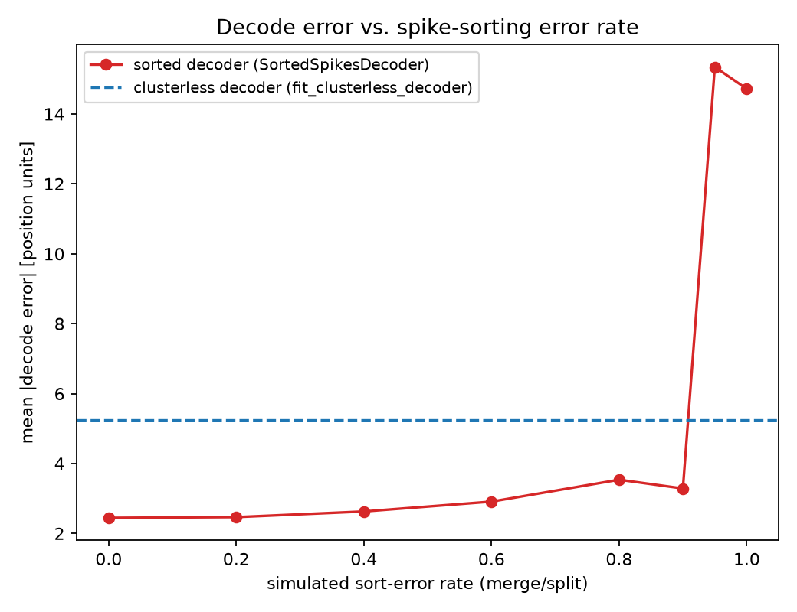
fig, ax = plt.subplots(figsize=(6.5, 5.0))
ax.plot(
comparison["error_rates"], comparison["sorted_errors"], "o-",
color="tab:red", label="sorted decoder (SortedSpikesDecoder)",
)
ax.axhline(
comparison["clusterless_error"], color="tab:blue", ls="--",
label="clusterless decoder (fit_clusterless_decoder)",
)
ax.set_xlabel("simulated sort-error rate (merge/split)")
ax.set_ylabel("mean |decode error| [position units]")
ax.set_title("Decode error vs. spike-sorting error rate")
ax.legend(loc="upper left", fontsize=9)
fig.tight_layout()Question: Is the classic population vector (Georgopoulos et al. 1982/1986) biased when M1 preferred directions are non-uniformly distributed, and does a maximum-likelihood/Bayesian tuning-curve decode (Sanger 1996) stay unbiased where the population vector fails?
Goal: Reproduce Sanger's (1996) central result directly: population-vector decoding implicitly assumes preferred directions uniformly tile the circle, so it is systematically biased toward the dense preferred-direction region when they do not, while the maximum-likelihood/probability-density decoder stays unbiased.
An 80-unit M1 population performs an 8-direction center-out task (Georgopoulos et al. 1982). Preferred directions are deliberately clustered rather than uniform (Sanger 1996's critique), each unit's von-Mises-shaped tuning curve is fit from training trials with ``nstat.fit_poisson_glm``, and held-out trials are decoded with (a) the classic Georgopoulos population vector and (b) a maximum-likelihood grid search over the fitted tuning curves.
Run: python examples/extras/decoding_place_field_demo.py --export-figures · Script
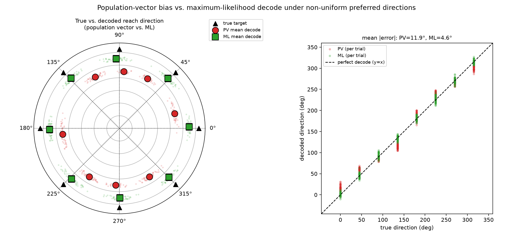
fig = plt.figure(figsize=(13.0, 6.0))
ax_polar = fig.add_subplot(1, 2, 1, projection="polar")
ax_cart = fig.add_subplot(1, 2, 2)
rng_jitter = np.random.default_rng(0)
r_pv = 0.9 + rng_jitter.uniform(-0.03, 0.03, size=pv_decode.shape[0])
r_ml = 1.1 + rng_jitter.uniform(-0.03, 0.03, size=ml_decode.shape[0])
ax_polar.scatter(pv_decode, r_pv, s=8, color="tab:red", alpha=0.18, linewidths=0)
ax_polar.scatter(ml_decode, r_ml, s=8, color="tab:green", alpha=0.18, linewidths=0)
for target in TARGET_ANGLES:
ax_polar.plot([target, target], [0.0, 1.25], color="0.3", lw=1.0, ls=":")
ax_polar.scatter(
TARGET_ANGLES, np.full(N_TARGETS, 1.25), marker="^", s=70, color="k",
zorder=4, label="true target",
)
pv_means = np.array([d["pv_mean"] for d in result["per_direction"]])
ml_means = np.array([d["ml_mean"] for d in result["per_direction"]])
ax_polar.scatter(
pv_means, np.full(N_TARGETS, 0.9), s=130, color="tab:red", edgecolor="k",
zorder=5, label="PV mean decode",
)
ax_polar.scatter(
ml_means, np.full(N_TARGETS, 1.1), s=130, color="tab:green", marker="s",
edgecolor="k", zorder=5, label="ML mean decode",
)
ax_polar.set_ylim(0.0, 1.35)
ax_polar.set_yticklabels([])
ax_polar.set_title(
"True vs. decoded reach direction\n(population vector vs. ML)", fontsize=10
)
ax_polar.legend(loc="upper right", bbox_to_anchor=(1.35, 1.15), fontsize=8)
true_deg = np.degrees(theta_test)
pv_display_deg = true_deg + np.degrees(_circular_diff(pv_decode, theta_test))
ml_display_deg = true_deg + np.degrees(_circular_diff(ml_decode, theta_test))
ax_cart.scatter(true_deg, pv_display_deg, s=10, color="tab:red", alpha=0.25,
label="PV (per trial)")
ax_cart.scatter(true_deg, ml_display_deg, s=10, color="tab:green", alpha=0.25,
label="ML (per trial)")
lims = (-45.0, 360.0)
ax_cart.plot(lims, lims, "k--", lw=1.2, label="perfect decode (y=x)")
ax_cart.set_xlim(*lims)
ax_cart.set_ylim(*lims)
ax_cart.set_aspect("equal")
ax_cart.set_xlabel("true direction (deg)")
ax_cart.set_ylabel("decoded direction (deg)")
ax_cart.set_title(
f"mean |error|: PV={np.degrees(result['mean_pv_error']):.1f}°, "
f"ML={np.degrees(result['mean_ml_error']):.1f}°",
fontsize=10,
)
ax_cart.legend(loc="upper left", fontsize=8)
fig.suptitle(
"Population-vector bias vs. maximum-likelihood decode under "
"non-uniform preferred directions"
)
fig.tight_layout()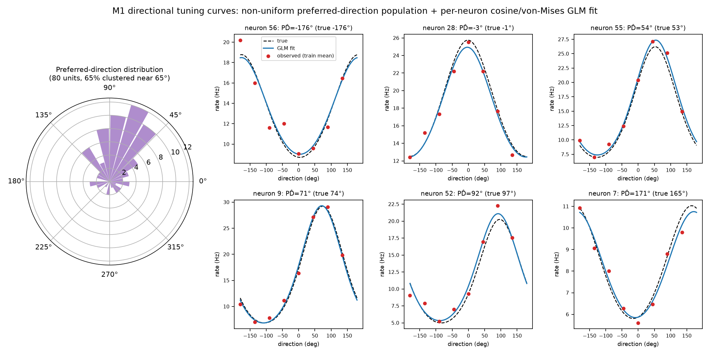
fig = plt.figure(figsize=(14.0, 7.0))
gs = fig.add_gridspec(2, 4, width_ratios=[1.3, 1.0, 1.0, 1.0])
ax_hist = fig.add_subplot(gs[:, 0], projection="polar")
n_bins = 24
counts, edges = np.histogram(pd_true, bins=n_bins, range=(-np.pi, np.pi))
centers = 0.5 * (edges[:-1] + edges[1:])
width = (edges[1] - edges[0]) * 0.9
ax_hist.bar(centers, counts, width=width, color="tab:purple", alpha=0.75)
ax_hist.set_title(
f"Preferred-direction distribution\n({n_neurons} units, "
f"{CLUSTER_FRACTION:.0%} clustered near "
f"{np.degrees(CLUSTER_CENTER):.0f}°)",
fontsize=10,
)
theta_fine = np.linspace(-np.pi, np.pi, 200)
deg_fine = np.degrees(theta_fine)
example_idx = np.argsort(pd_true)[
np.linspace(0, n_neurons - 1, 6).round().astype(int)
]
axes_tc = [fig.add_subplot(gs[r, c]) for r in range(2) for c in range(1, 4)]
for panel, i in zip(axes_tc, example_idx):
true_rate = np.exp(
result["baseline_log_rate"][i]
+ result["kappa_true"][i] * np.cos(theta_fine - pd_true[i])
)
fitted_rate = np.exp(
result["intercept_hat"][i]
+ result["coef_hat"][i, 0] * np.cos(theta_fine)
+ result["coef_hat"][i, 1] * np.sin(theta_fine)
)
train_mask_by_target = result["theta_train"][:, None] == TARGET_ANGLES[None, :]
emp_rate = np.array(
[
result["counts_train"][train_mask_by_target[:, j], i].mean()
/ TRIAL_DURATION_S
for j in range(N_TARGETS)
]
)
panel.plot(deg_fine, true_rate, "k--", lw=1.2, label="true")
panel.plot(deg_fine, fitted_rate, color="tab:blue", lw=1.6, label="GLM fit")
panel.scatter(
_wrap_deg(np.degrees(TARGET_ANGLES)), emp_rate, color="tab:red", s=18,
zorder=3, label="observed (train mean)",
)
panel.set_title(
f"neuron {i}: PD̂={np.degrees(result['pd_hat'][i]):.0f}° "
f"(true {np.degrees(pd_true[i]):.0f}°)",
fontsize=9,
)
panel.set_xlabel("direction (deg)", fontsize=8)
panel.set_ylabel("rate (Hz)", fontsize=8)
panel.tick_params(labelsize=7)
axes_tc[0].legend(loc="best", fontsize=7)
fig.suptitle(
"M1 directional tuning curves: non-uniform preferred-direction "
"population + per-neuron cosine/von-Mises GLM fit"
)
fig.tight_layout()Question: How should a decoder be calibrated from neural + behavioral training data, and does closed-loop-aware (ReFIT) recalibration correct a systematic directional bias baked into an open-loop-calibrated decoder's training label, relative to a naively calibrated Kalman decoder?
Goal: Show that decoder *calibration*, not just decoder architecture, determines closed-loop BCI performance: the naive decoder's uncorrected directional bias makes it mis-aim on every reach, so it curves away from every target and never acquires it, while ReFIT recalibration -- relabeling the same neural data with the intended, target-directed kinematics -- corrects the bias and acquires all 8 targets, illustrating in miniature the ReFIT-relabeling principle of Gilja et al. (2012) (this demo does not measure target-acquisition time and does not reproduce their specific acquisition-time speedup). Also exercises the opt-in, JAX-backed Dynamax alternatives to the KF_EM / PP_EM / mPPCO_EM families (whose MATLAB mirrors are native in DecodingAlgorithms), plus the honest fit-quality metric (predictive log-likelihood) on which all three EM workflows are compared.
A Wu (2006)-style linear-Gaussian arm state (position/velocity) coupled to a 40-unit population with linear velocity encoding drives an 8-target center-out reach+hold task. A naive-KF decoder is calibrated from a constant-velocity, never-decelerating training label with a directional drift that is never corrected (a stand-in for open-loop/passive calibration blocks that never captured the deceleration/stop epoch of a real reach); a ReFIT-KF decoder (Gilja, Nuyujukian, Chestek, Cunningham, Yu, Fan, Churchland, Kaufman, Kao, Ryu & Shenoy 2012) is recalibrated by relabeling the *same* recorded neural data with the true target-directed, decelerating kinematics. Both share one generic Kalman motion model and are decoded with ``nstat.decoding_algorithms.DecodingAlgorithms.kalman_filter`` on held-out trials -- a pure NumPy/SciPy contrast that always runs, with no optional dependency. An opt-in appendix (behind the ``[dynamax]`` extra) then walks through every routine in ``nstat.extras.em.dynamax_bridge``: linear-Gaussian EM (KF_EM equivalent), CMGF Poisson filter/smoother on a known Poisson-LGSSM (the point-process adaptive-filtering framework of Eden, Frank, Barbieri, Solo & Brown 2004), point-process EM (PP_EM), hybrid Poisson+Gaussian EM (mPPCO_EM), and a pure-NumPy held-out predictive log-likelihood.
Run: python examples/extras/em_dynamax_demo.py --export-figures · Script
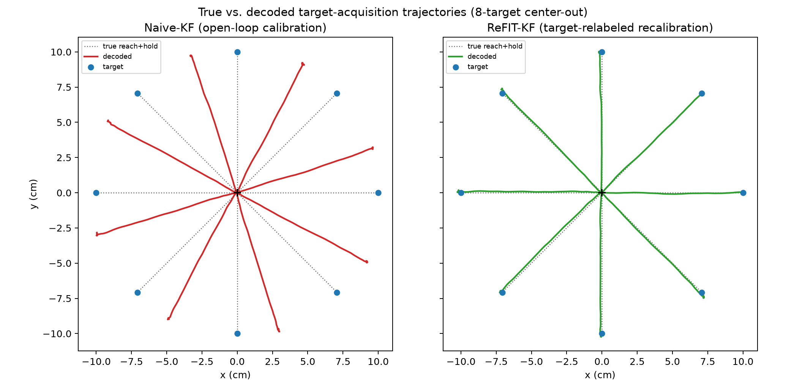
fig1, axes1 = plt.subplots(1, 2, figsize=(11.5, 5.6), sharex=True, sharey=True)
panel_specs = (
("naive", "Naive-KF (open-loop calibration)", "tab:red"),
("refit", "ReFIT-KF (target-relabeled recalibration)", "tab:green"),
)
for ax, (name, title, color) in zip(axes1, panel_specs):
for k in range(N_TARGETS):
ax.plot(
true_trajectories[k][:, 0], true_trajectories[k][:, 1],
color="black", lw=1.0, ls=":", alpha=0.6,
label="true reach+hold" if k == 0 else None,
)
traj = decode[name]["trajectories"][k]
ax.plot(traj[:, 0], traj[:, 1], color=color, lw=1.7,
label="decoded" if k == 0 else None)
ax.scatter(targets[:, 0], targets[:, 1], color="tab:blue", s=30, zorder=5,
label="target")
ax.scatter([0.0], [0.0], color="black", marker="+", s=60, zorder=5)
ax.set_aspect("equal")
ax.set_xlabel("x (cm)")
ax.set_title(title)
ax.legend(loc="upper left", fontsize=7)
axes1[0].set_ylabel("y (cm)")
fig1.suptitle("True vs. decoded target-acquisition trajectories (8-target center-out)")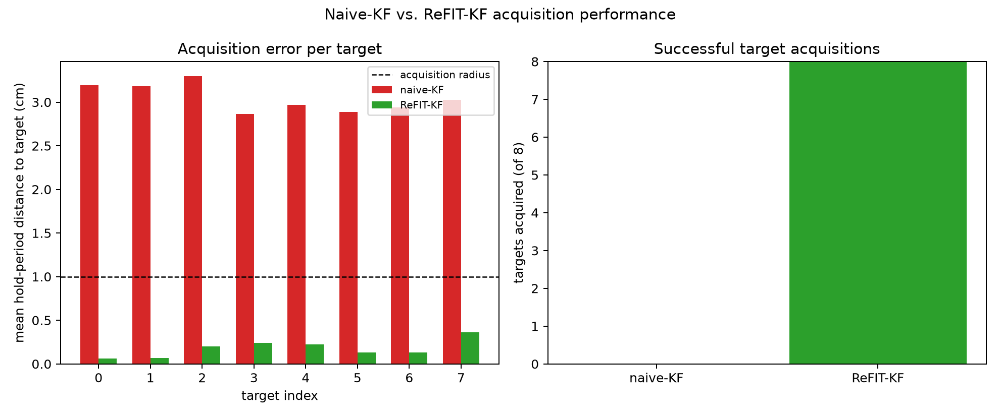
fig2, (ax2a, ax2b) = plt.subplots(1, 2, figsize=(11.0, 4.6))
x_pos = np.arange(N_TARGETS)
width = 0.35
ax2a.bar(x_pos - width / 2, decode["naive"]["hold_err"], width,
color="tab:red", label="naive-KF")
ax2a.bar(x_pos + width / 2, decode["refit"]["hold_err"], width,
color="tab:green", label="ReFIT-KF")
ax2a.axhline(ACQUISITION_RADIUS, color="black", ls="--", lw=1.0,
label="acquisition radius")
ax2a.set_xlabel("target index")
ax2a.set_ylabel("mean hold-period distance to target (cm)")
ax2a.set_title("Acquisition error per target")
ax2a.legend(fontsize=8)
acquired_counts = [summary["naive"]["targets_acquired"], summary["refit"]["targets_acquired"]]
ax2b.bar(["naive-KF", "ReFIT-KF"], acquired_counts, color=["tab:red", "tab:green"])
ax2b.set_ylim(0, N_TARGETS)
ax2b.set_ylabel(f"targets acquired (of {N_TARGETS})")
ax2b.set_title("Successful target acquisitions")
fig2.suptitle("Naive-KF vs. ReFIT-KF acquisition performance")Question: Can a ``nspikeTrain`` from any recording vendor (Blackrock, Plexon, TDT) round-trip through ``neo.core.SpikeTrain`` — the common object model Garcia et al. (2014) designed for exactly this heterogeneity — preserving spike times, recording window, and name, and be packaged as a ``neo.core.Segment`` for Elephant / SpikeInterface?
Goal: Demonstrate the Neo bridge (Garcia et al. 2014, Front Neuroinform 8:10) as the canonical, vendor-agnostic hand-off between nstat and the broader Neo ecosystem, so a single ingestion path serves every site of a multi-site trial — round-trip integrity is the regression-guard contract.
A multi-site iBCI trial mixes recording hardware: one site's Blackrock Utah array, another site's Plexon or TDT system. Builds a small ``nstat.nspikeTrain`` (3 spikes over a 2 s window) standing in for a unit from any one of those rigs, converts it to ``neo.core.SpikeTrain``, round-trips back, and packages a ``SpikeTrainCollection`` as a ``neo.core.Segment``. The Segment is then ready for downstream consumption by Elephant, SpikeInterface, or Brian2 — one pipeline, any vendor.
Run: python examples/extras/interop_neo_demo.py · Script
Question: Does the pynapple bridge round-trip a ``nspikeTrain`` through ``pynapple.Ts`` and preserve the recording window when ``IntervalSet.restrict`` -- the epoch algebra Viejo et al. (2023) built for exactly this bookkeeping -- carves out a clinically-meaningful sub-epoch, such as an interictal-only iEEG window or a single BCI-trial window?
Goal: Demonstrate that the pynapple bridge survives the most common pynapple workflow (IntervalSet restriction) without losing the recording-window metadata, so restricting to interictal-only or BCI-trial epochs (Viejo et al. 2023, eLife 12:e85786) never requires hand-rolled index arithmetic -- a common source of silent alignment bugs when spikes, LFP, and behavior stream at different rates.
Builds a 10 s nstat ``nspikeTrain`` (50 Poisson spikes), converts it to ``pynapple.Ts`` with the recording-window ``IntervalSet``, restricts to ``[2, 5] s`` -- standing in for a clinically meaningful epoch such as an interictal-only iEEG window or a single BCI-trial window -- using pynapple's ``IntervalSet.restrict`` epoch-math operators, and converts back to ``nspikeTrain`` with the sub-epoch as support.
Run: python examples/extras/interop_pynapple_demo.py · Script
Question: Does the NWB bridge resolve per-unit observation windows from ``obs_intervals`` -- the ``units`` table shape used by spike-sorted (single/multi-unit) NWB datasets -- and honour an explicit ``time_window=`` override, the general ingestion pattern that also matters for clinical human-iEEG NWB/DANDI datasets such as AJILE12 (Peterson et al. 2022)?
Goal: Document the two supported NWB-window-resolution paths for spike-sorted ``units``/``obs_intervals`` tables, so downstream pipelines reading Allen / DANDI / OpenScope NWB files know which path applies to their file layout, and situate that ingestion path against the kind of real clinical human-iEEG NWB/DANDI dataset (AJILE12) that motivates a robust reader in the first place.
AJILE12 (Peterson et al. 2022, Sci Data 9:184; DANDI dandiset 000055) is a real human-iEEG dataset on the DANDI Archive: naturalistic, days-long chronic ECoG paired with upper-body pose, recorded from 12 subjects during clinical epilepsy monitoring, and stored in NWB (Teeters et al. 2015; Rübel et al. 2022) — a concrete example of why a robust, standardized NWB reader matters for clinical/BCI neurophysiology data sharing. AJILE12 itself stores continuous 500 Hz ECoG voltage as a ``pynwb.ecephys.ElectricalSeries``, not a spike-sorted ``units``/``obs_intervals`` table -- ECoG at that scale doesn't yield sortable single units. This demo exercises the general ``units``/``obs_intervals`` ingestion path used by spike-sorted (single/multi-unit) NWB datasets on a synthetic in-memory NWB file with 3 units (each observed over ``[0, 10] s``), converting the ``units`` table to a ``SpikeTrainCollection`` two ways: (a) by resolving the ``obs_intervals`` column, and (b) with an explicit ``time_window=(t0, t1)`` override that silences the fallback warning. This demo does not download AJILE12 or any other DANDI dataset.
Run: python examples/extras/interop_nwb_demo.py · Script
Question: Do motor populations occupy a low-dimensional rotational neural manifold -- a single shared rotational dynamical system, condition-invariant in frequency -- recoverable on single trials by GPFA, and does reconstruction fidelity improve with population size?
Goal: Confirm GPFA recovers a shared rotational motor-cortical manifold on single trials, without ever being given the condition label or the generating equations -- and that reconstruction fidelity improves with population size, echoing the manifold-stability results of Gallego et al. 2018/2020.
Simulates six reach conditions whose latent trajectories share one 2-D skew-symmetric rotation generator (same angular frequency, distinct per-condition initial amplitude/phase -- the rotational signature Churchland et al. 2012 found in M1/PMd population recordings), projected through a fixed random loading matrix into an 80-unit Poisson population with condition-locked baseline-rate offsets. Fits GPFA with ``x_dim=2`` via the Elephant bridge across all trials/conditions pooled, then realigns each recovered single-trial trajectory onto the true phase plane (ordinary least squares) and scores it with the multiple correlation coefficient. A population-size sweep (8/20/40/80 neurons) re-runs the full simulate-then-fit pipeline to show fidelity improving with more neurons.
Run: python examples/extras/latents_gpfa_demo.py --export-figures · Script
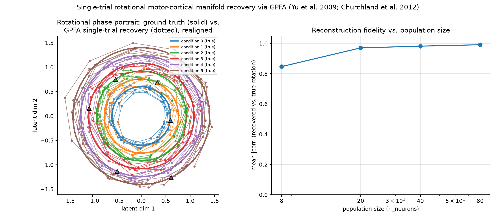
fig, (ax_phase, ax_fidelity) = plt.subplots(1, 2, figsize=(12.5, 5.5))
cmap = plt.get_cmap("tab10")
plotted_condition: set[int] = set()
for k, cond in enumerate(condition_ids):
color = cmap(cond % 10)
if cond not in plotted_condition:
z_true = true_latents[k]
ax_phase.plot(
z_true[:, 0], z_true[:, 1], color=color, lw=2.2, alpha=0.9,
label=f"condition {cond} (true)", zorder=2,
)
ax_phase.scatter(
z_true[0, 0], z_true[0, 1], color=color, marker="^", s=60,
edgecolor="k", zorder=4,
)
plotted_condition.add(cond)
ax_phase.plot(
aligned[k][:, 0], aligned[k][:, 1], color=color, lw=0.9, ls="-",
marker="o", markersize=3, alpha=0.7, zorder=3,
)
ax_phase.set_xlabel("latent dim 1")
ax_phase.set_ylabel("latent dim 2")
ax_phase.set_aspect("equal")
ax_phase.set_title(
"Rotational phase portrait: ground truth (solid) vs.\n"
"GPFA single-trial recovery (dotted), realigned"
)
ax_phase.legend(loc="upper right", fontsize=7, ncol=1)
sweep_n = [n for n, _ in sweep_results]
sweep_fid = [f for _, f in sweep_results]
ax_fidelity.plot(sweep_n, sweep_fid, "o-", color="tab:blue", lw=1.8, ms=7)
ax_fidelity.set_xscale("log")
ax_fidelity.set_xticks(list(POPULATION_SIZES))
ax_fidelity.set_xticklabels([str(n) for n in POPULATION_SIZES])
ax_fidelity.set_ylim(0.0, 1.05)
ax_fidelity.set_xlabel("population size (n_neurons)")
ax_fidelity.set_ylabel("mean |corr| (recovered vs. true rotation)")
ax_fidelity.set_title("Reconstruction fidelity vs. population size")
ax_fidelity.grid(True, alpha=0.3)
fig.suptitle(
"Single-trial rotational motor-cortical manifold recovery via GPFA "
"(Yu et al. 2009; Churchland et al. 2012)"
)
fig.tight_layout()Question: Can time-resolved SPIKE-distance / SPIKE-synchronization / ISI-distance metrics track the emergence and collapse of pathological beta-burst synchrony across an STN population as it toggles between a Parkinsonian-OFF regime (long beta bursts, tight coincident firing) and an adaptive-DBS regime (truncated bursts, units returning toward independent firing)?
Goal: Show that time-resolved, parameter-free spike-train synchrony metrics recover a clinically meaningful signal by construction: population synchrony tracks the injected beta-burst envelope, running higher during the long-burst Parkinsonian-OFF regime than during the truncated-burst adaptive-DBS regime (Kuhn et al. 2009) -- the same population-level beta-synchrony biomarker that motivates closed-loop adaptive DBS.
Simulates an 8-unit STN population under a shared, time-varying 15-30 Hz beta-burst drive that toggles between a synchronized "Parkinsonian OFF" regime (long bursts, tight coincident firing; Tinkhauser et al. 2017) and a desynchronized "adaptive-DBS" regime (truncated bursts, independent firing). Sliding-window ``isi_distance``, ``spike_distance``, and ``spike_synchronization`` (Kreuz et al. 2011/2012; Satuvuori et al. 2017) -- averaged over every unit pair, plus the population-level ``pairwise_spike_distance_matrix`` -- track the injected synchrony envelope, and the two regimes' burst-duration distributions are compared directly.
Run: python examples/extras/metrics_spike_distances_demo.py --export-figures · Script
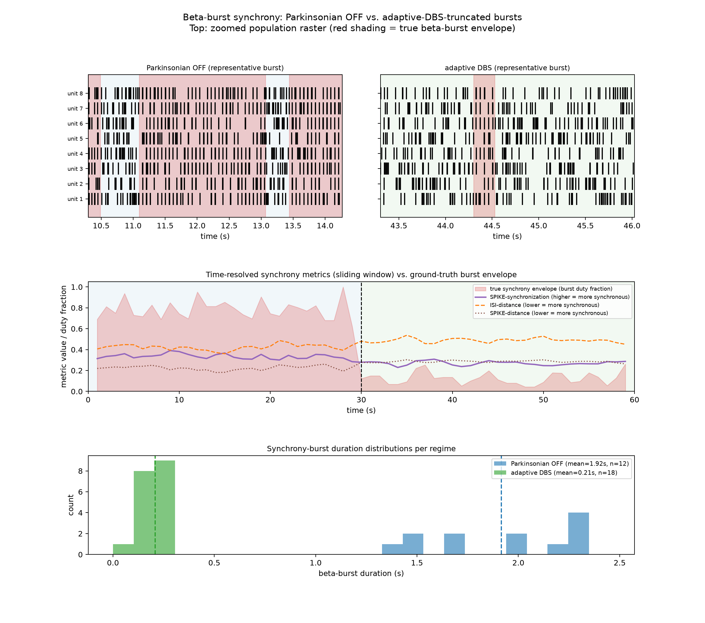
fig = plt.figure(figsize=(13.0, 11.5))
gs = fig.add_gridspec(3, 2, height_ratios=[1.3, 1.0, 0.9], hspace=0.55, wspace=0.15)
# Zoomed representative-window rasters -- at a 25+ Hz population rate,
# a full 60 s raster compresses to an unreadable solid black bar, so
# each regime gets its own zoom around one typical burst instead.
def _representative_window(
intervals: list[BurstInterval], target_dur: float,
pad_before: float, pad_after: float, lo: float, hi: float,
) -> tuple[float, float]:
idx = int(np.argmin([abs((iv.t1 - iv.t0) - target_dur) for iv in intervals]))
iv = intervals[idx]
return max(lo, iv.t0 - pad_before), min(hi, iv.t1 + pad_after)
win_off = _representative_window(
intervals_off, duration_off_mean, 0.8, 1.2, 0.0, T_OFF,
)
win_adbs = _representative_window(
intervals_adbs, duration_adbs_mean, 1.0, 1.5, T_OFF, T_TOTAL,
)
for col, (win, label, bg) in enumerate((
(win_off, "Parkinsonian OFF (representative burst)", "tab:blue"),
(win_adbs, "adaptive DBS (representative burst)", "tab:green"),
)):
ax = fig.add_subplot(gs[0, col])
ax.axvspan(win[0], win[1], color=bg, alpha=0.06, zorder=0)
for iv in intervals_all:
if iv.t1 >= win[0] and iv.t0 <= win[1]:
ax.axvspan(
max(iv.t0, win[0]), min(iv.t1, win[1]),
color="tab:red", alpha=0.22, zorder=1,
)
for i, u in enumerate(units):
spikes = np.asarray(u.spikeTimes)
in_win = spikes[(spikes >= win[0]) & (spikes <= win[1])]
ax.eventplot(in_win, lineoffsets=i + 1, linelengths=0.8, colors="black", zorder=2)
ax.set_yticks(range(1, N_UNITS + 1))
if col == 0:
ax.set_yticklabels([f"unit {i + 1}" for i in range(N_UNITS)], fontsize=7)
else:
ax.set_yticklabels([])
ax.set_xlim(win[0], win[1])
ax.set_xlabel("time (s)")
ax.set_title(label, fontsize=9)
ax_metric = fig.add_subplot(gs[1, :])
ax_metric.axvspan(0.0, T_OFF, color="tab:blue", alpha=0.06, zorder=0)
ax_metric.axvspan(T_OFF, T_TOTAL, color="tab:green", alpha=0.06, zorder=0)
if centers:
ax_metric.fill_between(
centers, 0.0, envelope_duty, color="tab:red", alpha=0.22, zorder=1,
label="true synchrony envelope (burst duty fraction)",
)
if have_pyspike and centers:
ax_metric.plot(
centers, sync_trace, color="tab:purple", lw=1.8, zorder=2,
label="SPIKE-synchronization (higher = more synchronous)",
)
ax_metric.plot(
centers, isi_trace, color="tab:orange", lw=1.4, ls="--", zorder=2,
label="ISI-distance (lower = more synchronous)",
)
ax_metric.plot(
centers, spike_trace, color="tab:brown", lw=1.4, ls=":", zorder=2,
label="SPIKE-distance (lower = more synchronous)",
)
else:
ax_metric.text(
0.5, 0.55, "PySpike not installed -- metric traces skipped",
transform=ax_metric.transAxes, ha="center", va="center", fontsize=10, color="gray",
)
ax_metric.text(
0.5, 0.40, "pip install nstat-toolbox[metrics]",
transform=ax_metric.transAxes, ha="center", va="center", fontsize=9, color="gray",
)
ax_metric.axvline(T_OFF, color="black", lw=1.2, ls="--")
ax_metric.set_xlim(0.0, T_TOTAL)
ax_metric.set_ylim(0.0, 1.05)
ax_metric.set_xlabel("time (s)")
ax_metric.set_ylabel("metric value / duty fraction")
if centers:
ax_metric.legend(loc="upper right", fontsize=7)
ax_metric.set_title(
"Time-resolved synchrony metrics (sliding window) vs. ground-truth burst envelope",
fontsize=10,
)
ax_hist = fig.add_subplot(gs[2, :])
all_durations = list(durations_off) + list(durations_adbs)
bins = np.linspace(0.0, max(all_durations) * 1.05, 25)
ax_hist.hist(
durations_off, bins=bins, alpha=0.6, color="tab:blue",
label=f"Parkinsonian OFF (mean={duration_off_mean:.2f}s, n={len(durations_off)})",
)
ax_hist.hist(
durations_adbs, bins=bins, alpha=0.6, color="tab:green",
label=f"adaptive DBS (mean={duration_adbs_mean:.2f}s, n={len(durations_adbs)})",
)
ax_hist.axvline(duration_off_mean, color="tab:blue", lw=1.5, ls="--")
ax_hist.axvline(duration_adbs_mean, color="tab:green", lw=1.5, ls="--")
ax_hist.set_xlabel("beta-burst duration (s)")
ax_hist.set_ylabel("count")
ax_hist.set_title("Synchrony-burst duration distributions per regime", fontsize=10)
ax_hist.legend(loc="upper right", fontsize=8)
fig.suptitle(
"Beta-burst synchrony: Parkinsonian OFF vs. adaptive-DBS-truncated bursts\n"
"Top: zoomed population raster (red shading = true beta-burst envelope)"
)Question: Can a gamma modulated-renewal CIF recover, from spikes alone, the three firing phenotypes (tonic-regular / tremor-locked bursting / irregular-high-entropy) neurosurgeons use to confirm MER targeting of the STN/GPi during DBS surgery?
Goal: Confirm the modulated-renewal CIF recovers, from spikes alone, the three-way firing-phenotype separation neurosurgeons use to confirm STN/GPi MER targeting (Bergman et al. 1994; Levy et al. 2000; Sterio et al. 2002; Sedov et al. 2025): tonic-regular units show low renewal CV, irregular units show a Poisson-like renewal CV, and tremor-locked bursting units show a Poisson-like renewal CV *but* an elevated, oscillation-driven burst index -- the statistic that separates rate-modulation-driven bursting from plain irregularity.
Simulates three synthetic single units along one DBS microelectrode (MER) pass -- a tonic-regular unit (high-shape gamma renewal, CV well below 1), a tremor-locked bursting unit (baseline rate modulated at a 4-6 Hz tremor-band frequency, shape~=1 local renewal), and an irregular/high-entropy unit (plain shape=1 Poisson, unmodulated) -- and fits each independently with :func:`nstat.extras.spatial.fit_modulated_renewal` (Barbieri, Quirk, Frank, Wilson & Brown 2001; Barbieri-Brown renewal/time-rescaling lineage). Checks each fit's operational-time ISIs against Uniform(0,1) both continuously (:func:`nstat.extras.spatial.renewal_cdf`) and with the discrete-time-rescaling correction (:mod:`nstat.extras.spatial.marked_gof`), and recovers a raw-ISI burst index by resimulating from each fit's own recovered rate and renewal shape.
Run: python examples/extras/modulated_renewal_microelectrode_demo.py --export-figures · Script
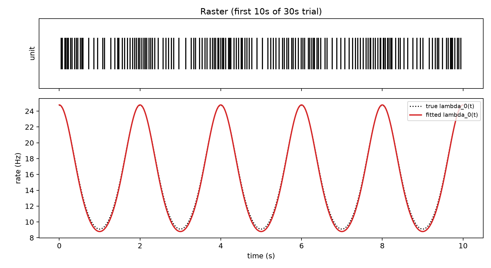
fig1, axes1 = plt.subplots(3, 2, figsize=(11.5, 10.0))
for i, ph in enumerate(PHENOTYPES):
res = phenotype_results[ph.key]
spike_times = res["spike_times"]
fit = res["fit"]
show_t = ph.raster_window_s
show_mask = spike_times <= show_t
ax_raster = axes1[i, 0]
ax_raster.eventplot(
spike_times[show_mask], lineoffsets=0.5, linelengths=0.8, colors="black",
)
ax_raster.set_yticks([])
ax_raster.set_ylabel(ph.label, fontsize=9)
ax_raster.set_title(
f"{ph.label}: raster (first {show_t:.1f}s of {T_TRIAL:.0f}s)", fontsize=9,
)
ax_raster.set_xlim(0.0, show_t)
if i == 2:
ax_raster.set_xlabel("time (s)")
ax_rate = axes1[i, 1]
t_plot = np.linspace(0.0, show_t, 1000)
true_rate = _rate_fn(ph.beta0_true, ph.beta1_true, ph.freq_hz)
ax_rate.plot(t_plot, true_rate(t_plot), color="black", lw=1.4, ls=":",
label="true lambda_0(t)")
fitted_lam0 = np.exp(
fit.beta[0] + fit.beta[1] * np.cos(2.0 * np.pi * ph.freq_hz * t_plot)
)
ax_rate.plot(t_plot, fitted_lam0, color=ph.color, lw=1.8,
label="fitted lambda_0(t)")
ax_rate.set_ylabel("rate (Hz)")
ax_rate.legend(loc="upper right", fontsize=7)
ax_rate.set_title(f"{ph.label}: rate recovery", fontsize=9)
if i == 2:
ax_rate.set_xlabel("time (s)")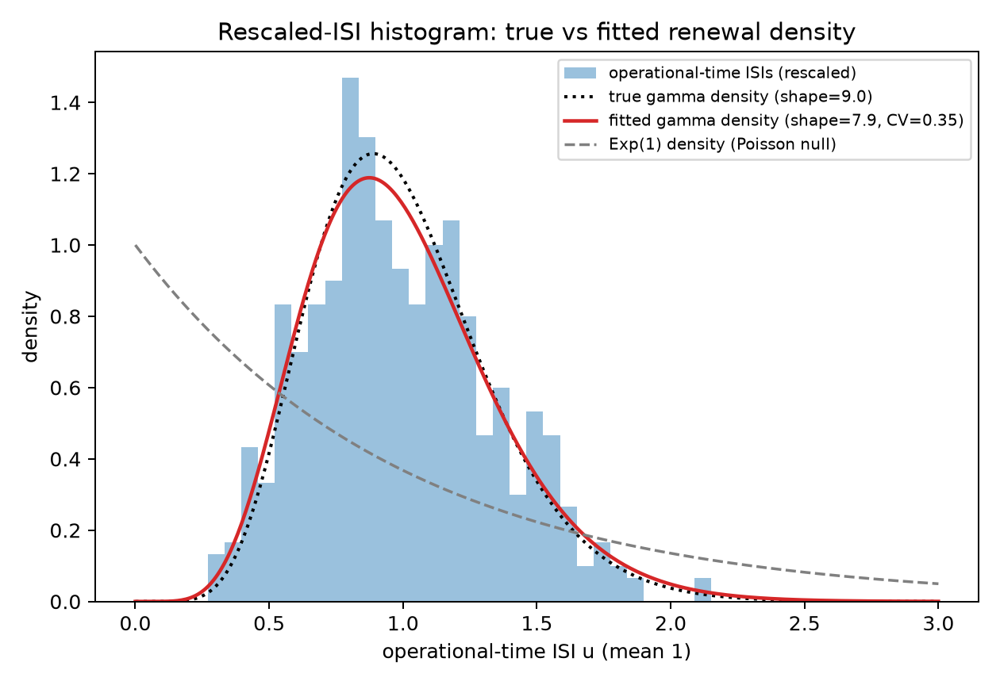
fig2, axes2 = plt.subplots(1, 3, figsize=(15.0, 4.8))
u_grid = np.linspace(1e-4, 3.0, 400)
h = 1e-4
for i, ph in enumerate(PHENOTYPES):
res = phenotype_results[ph.key]
fit = res["fit"]
ax = axes2[i]
pdf_fit = (
renewal_cdf(u_grid + h, fit.shape_param, RENEWAL)
- renewal_cdf(np.maximum(u_grid - h, 0.0), fit.shape_param, RENEWAL)
) / (2.0 * h)
pdf_poisson = (
renewal_cdf(u_grid + h, 1.0, RENEWAL)
- renewal_cdf(np.maximum(u_grid - h, 0.0), 1.0, RENEWAL)
) / (2.0 * h)
pdf_true = (
renewal_cdf(u_grid + h, ph.shape_true, RENEWAL)
- renewal_cdf(np.maximum(u_grid - h, 0.0), ph.shape_true, RENEWAL)
) / (2.0 * h)
ax.hist(
fit.rescaled_isis, bins=30, density=True, color=ph.color, alpha=0.40,
label="operational-time ISIs",
)
ax.plot(u_grid, pdf_true, color="black", lw=1.6, ls=":",
label=f"true (shape={ph.shape_true:.1f})")
ax.plot(u_grid, pdf_fit, color=ph.color, lw=1.8,
label=f"fitted (shape={fit.shape_param:.1f}, CV={fit.cv:.2f})")
ax.plot(u_grid, pdf_poisson, color="gray", lw=1.2, ls="--",
label="Exp(1) (Poisson null)")
ax.set_xlabel("operational-time ISI u (mean 1)")
if i == 0:
ax.set_ylabel("density")
ax.set_title(f"{ph.label}", fontsize=9)
ax.legend(loc="upper right", fontsize=6.5)
fig2.suptitle("Rescaled-ISI histograms: true vs fitted renewal density, per phenotype")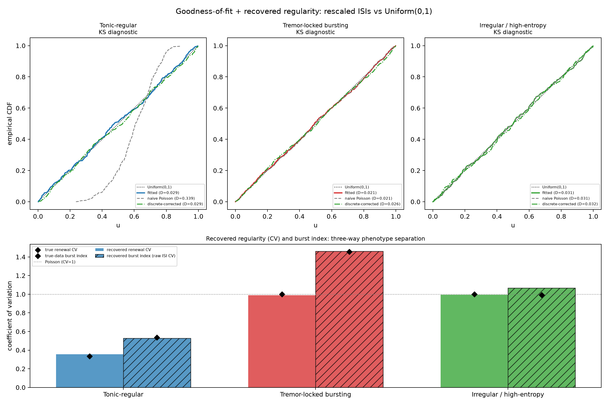
fig3 = plt.figure(figsize=(13.5, 9.0))
gs = fig3.add_gridspec(2, 3, height_ratios=[1.2, 1.0])
grid01 = np.linspace(0.0, 1.0, 200)
for i, ph in enumerate(PHENOTYPES):
res = phenotype_results[ph.key]
gof = res["gof"]
ax = fig3.add_subplot(gs[0, i])
ax.plot(grid01, grid01, color="black", lw=1.0, ls=":", label="Uniform(0,1)")
ax.plot(
np.sort(res["u_fit"]),
np.linspace(0, 1, len(res["u_fit"]), endpoint=False),
color=ph.color, lw=1.8,
label=f"fitted (D={res['ks_fit_statistic']:.3f})",
)
ax.plot(
np.sort(res["u_poisson"]),
np.linspace(0, 1, len(res["u_poisson"]), endpoint=False),
color="tab:gray", lw=1.2, ls="--",
label=f"naive Poisson (D={res['ks_poisson_statistic']:.3f})",
)
ax.plot(
np.sort(gof.u_corrected),
np.linspace(0, 1, len(gof.u_corrected), endpoint=False),
color="tab:green", lw=1.4, ls="-.",
label=f"discrete-corrected (D={gof.ks_corrected:.3f})",
)
ax.set_xlabel("u")
if i == 0:
ax.set_ylabel("empirical CDF")
ax.set_title(f"{ph.label}\nKS diagnostic", fontsize=9)
ax.legend(loc="lower right", fontsize=6)
ax_bar = fig3.add_subplot(gs[1, :])
labels = [ph.label for ph in PHENOTYPES]
x = np.arange(len(labels))
width = 0.35
cv_hat = [phenotype_results[ph.key]["fit"].cv for ph in PHENOTYPES]
cv_true = [phenotype_results[ph.key]["cv_true"] for ph in PHENOTYPES]
burst_hat = [phenotype_results[ph.key]["burst_index_recovered"] for ph in PHENOTYPES]
burst_true = [phenotype_results[ph.key]["burst_index_true"] for ph in PHENOTYPES]
colors = [ph.color for ph in PHENOTYPES]
ax_bar.bar(x - width / 2, cv_hat, width, color=colors, alpha=0.75,
label="recovered renewal CV")
ax_bar.bar(x + width / 2, burst_hat, width, color=colors, alpha=0.75,
hatch="//", edgecolor="black", label="recovered burst index (raw ISI CV)")
ax_bar.scatter(x - width / 2, cv_true, marker="D", color="black", zorder=5,
label="true renewal CV")
ax_bar.scatter(x + width / 2, burst_true, marker="D", color="black", zorder=5,
label="true-data burst index")
ax_bar.axhline(1.0, color="gray", lw=1.0, ls=":", label="Poisson (CV=1)")
ax_bar.set_xticks(x)
ax_bar.set_xticklabels(labels)
ax_bar.set_ylabel("coefficient of variation")
ax_bar.set_title(
"Recovered regularity (CV) and burst index: three-way phenotype separation",
fontsize=9,
)
ax_bar.legend(loc="upper left", fontsize=6.5, ncol=2)
fig3.suptitle(
"Goodness-of-fit + recovered regularity: rescaled ISIs vs Uniform(0,1)"
)Question: Are clinically "silent" microdischarges organised around a few hidden epileptogenic hub sites, or randomly scattered — and can minimum-contrast estimation recover the hub count and dispersion from the offspring pattern alone?
Goal: Answer "are microdischarges organised around a few hidden epileptogenic hubs, or randomly scattered?" without ever observing the hub sites directly — confirm minimum-contrast estimation recovers the hub intensity ``kappa`` and dispersion scale within sampling error, and that the recovery holds regardless of whether the offspring geometry is Gaussian (Thomas) or hard-edged uniform (Matérn).
Simulates a Thomas process — ``kappa`` hidden epileptogenic hub sites (never observed), each seeding several sub-mm-dispersed Gaussian microdischarge offspring (Thomas 1949; Stead et al. 2010's isolated-microelectrode microseizure geometry) — and a Matérn-cluster process repeating the same hidden-hub question with an alternative uniform-disc offspring geometry (Matérn 1986). Recovers ``(sigma, lambda_p)`` and ``(R, lambda_p)`` — the dispersion and hub intensity ``kappa`` — from each offspring pattern alone via Diggle's (2013 §6.2.1) minimum-contrast estimator on the SOIRS pair correlation.
Run: python examples/extras/spatial_cluster_cox_demo.py --export-figures · Script
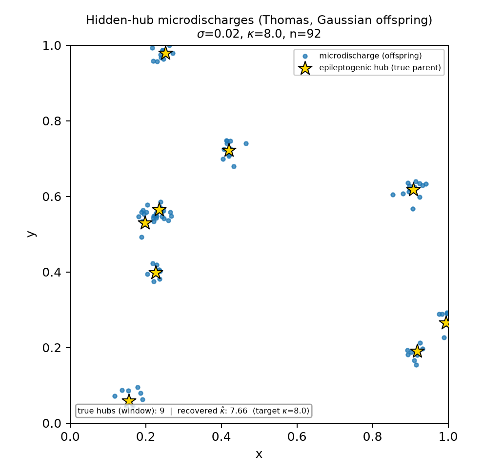
fig1, ax1 = plt.subplots(figsize=(5.5, 5.4))
_plot_scatter(
ax1, th["points"], th["true_parents"],
f"Hidden-hub microdischarges (Thomas, Gaussian offspring)\n"
f"$\\sigma$={th['sigma_true']}, $\\kappa$={th['lambda_p_true']}, "
f"n={th['points'].shape[0]}",
kappa_true=th["lambda_p_true"], kappa_hat=th["lambda_p_hat"],
)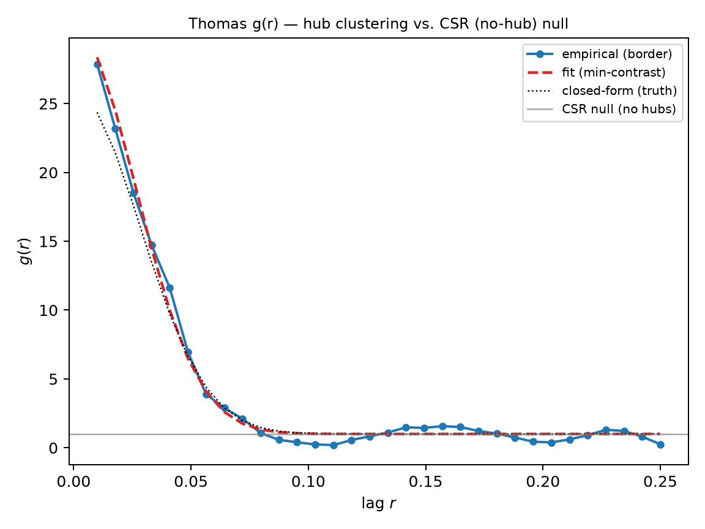
fig2, ax2 = plt.subplots(figsize=(6.4, 4.8))
_plot_pcf(
ax2, th["r_grid"], th["g_emp"], th["g_fit"], th["g_true"],
title="Thomas g(r) — hub clustering vs. CSR (no-hub) null",
)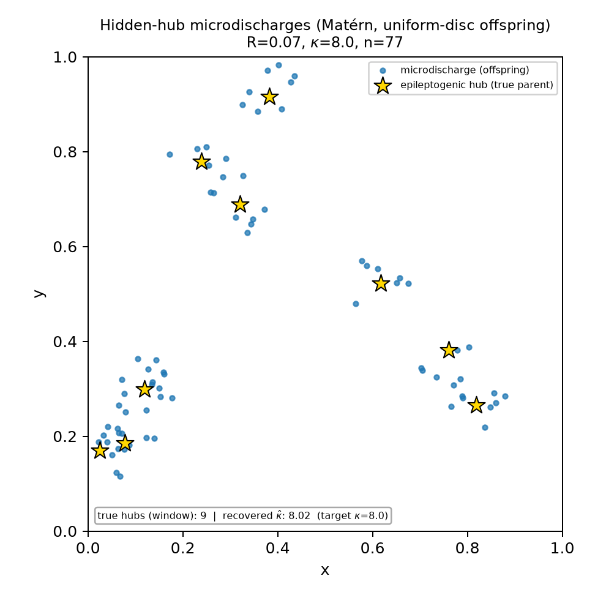
fig3, ax3 = plt.subplots(figsize=(5.5, 5.4))
_plot_scatter(
ax3, ma["points"], ma["true_parents"],
f"Hidden-hub microdischarges (Matérn, uniform-disc offspring)\n"
f"R={ma['radius_true']}, $\\kappa$={ma['lambda_p_true']}, "
f"n={ma['points'].shape[0]}",
kappa_true=ma["lambda_p_true"], kappa_hat=ma["lambda_p_hat"],
)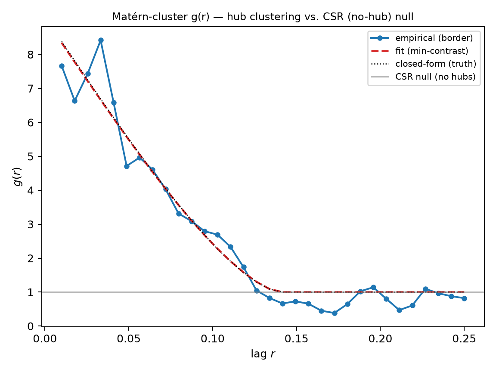
fig4, ax4 = plt.subplots(figsize=(6.4, 4.8))
_plot_pcf(
ax4, ma["r_grid"], ma["g_emp"], ma["g_fit"], ma["g_true"],
title="Matérn-cluster g(r) — hub clustering vs. CSR (no-hub) null",
)Question: When is co-active-site / implanted-electrode-contact spacing governed by a minimum-distance repulsion (hard-core exclusion) rather than independent placement (CSR) -- and can the Berman-Turner pseudo-likelihood recover the exclusion distance and confirm gamma ~= 1 (no interaction) for CSR?
Goal: Answer "is co-active/implanted-site spacing governed by independent placement or by a minimum-distance exclusion zone?" -- confirm the Berman-Turner pseudo-likelihood (Berman-Turner 1992; Baddeley-Turner 2000) recovers ``gamma_hat ~= 1`` for CSR and that the observed minimum inter-point distance recovers the true hard-core exclusion radius, while surfacing the documented upward bias on the hard-core *intensity* and the weak identification of the area-interaction ``eta``.
Simulates CSR (independent co-active/implanted-site placement) and a hard-core process enforcing a minimum inter-site distance ``R = 0.04`` (~4 mm on a 10 cm x 10 cm cortical/subdural patch, inside the range of SEEG trajectory-planning safety margins and optimal electrode-spacing analyses) at the same target intensity ``beta = 60``. The exclusion distance is recovered directly from the hard-core pattern's minimum inter-point distance, and :func:`nstat.extras.spatial.pseudo_likelihood_fit` confirms ``gamma_hat ~= 1`` (no interaction) for CSR. A Strauss process at ``gamma = 0.4`` (mild inhibition) and an area-interaction process at ``eta = 4.0`` (clustering) are kept as secondary, purely contrastive panels of the same Gibbs catalogue.
Run: python examples/extras/spatial_gibbs_demo.py --export-figures · Script
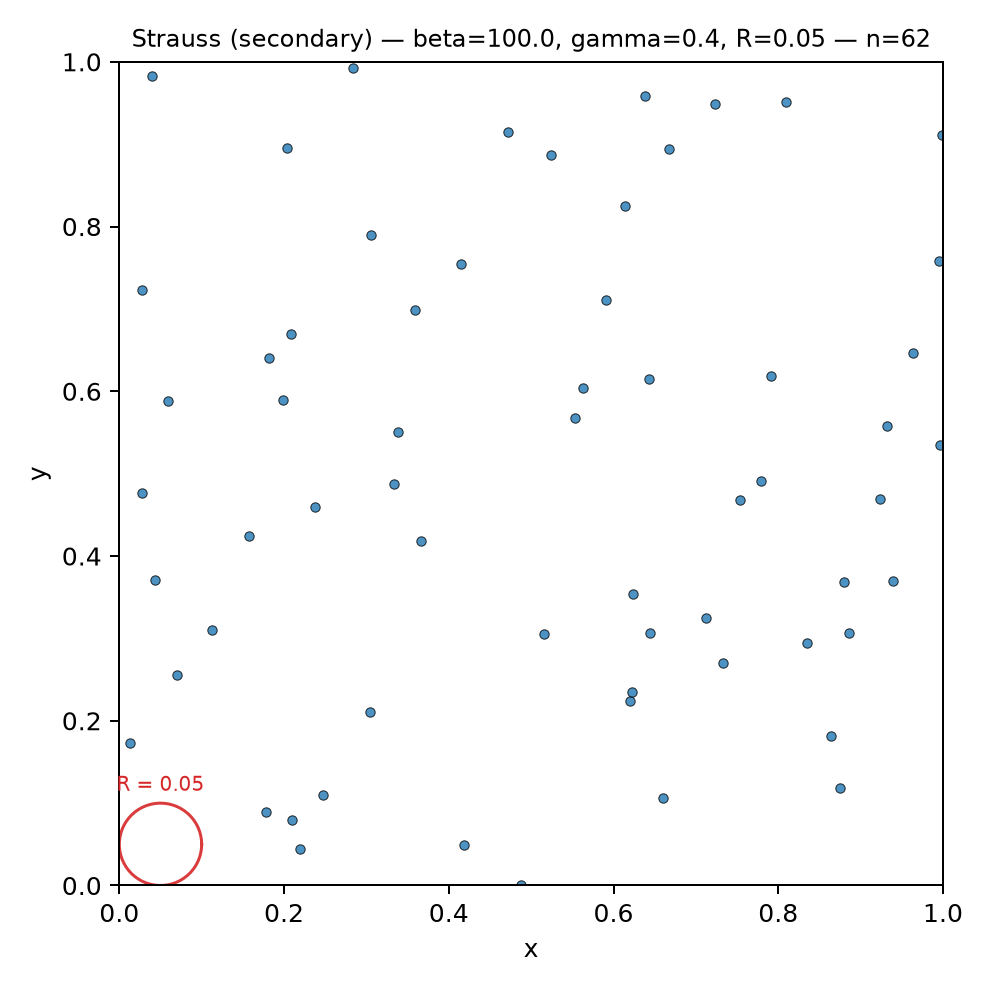
fig1, ax1 = plt.subplots(figsize=(5.5, 5.5))
_plot_scatter_with_radius(
ax1, st["points"], st["R"],
f"Strauss (secondary) — beta={st['beta_true']}, "
f"gamma={st['gamma_true']}, R={st['R']} — n={st['n_data']}",
)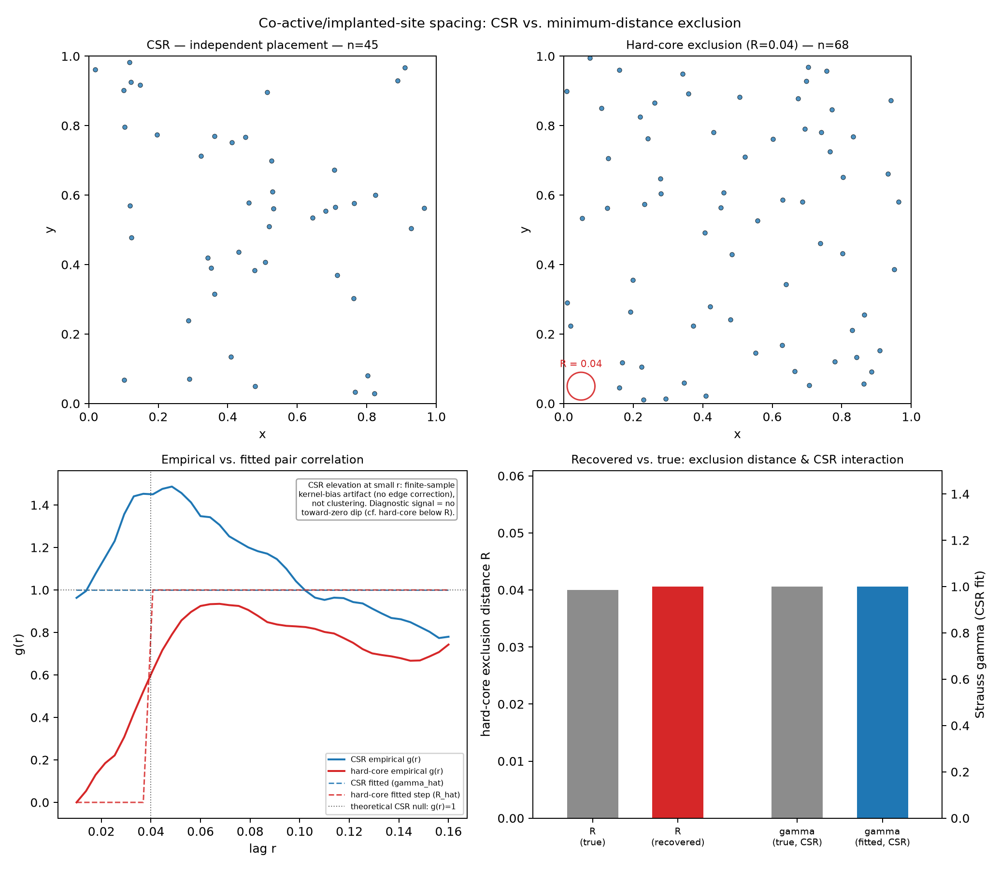
# Primary ground-truth-vs-estimate figure: CSR vs. hard-core patterns
# side by side, their empirical-vs-fitted pair correlation, and the
# recovered-vs-true exclusion distance / interaction strength.
fig2, ((ax2a, ax2b), (ax2c, ax2d)) = plt.subplots(2, 2, figsize=(11.5, 10.0))
_plot_scatter_with_radius(
ax2a, csr["points"], None,
f"CSR — independent placement — n={csr['n_data']}",
)
_plot_scatter_with_radius(
ax2b, hc["points"], hc["R"],
f"Hard-core exclusion (R={hc['R']}) — n={hc['n_data']}",
)
# Empirical vs. fitted pair correlation g(r). bw is widened past the
# library default rule-of-thumb: at n~50-70 points the default
# bandwidth leaves both curves too noisy near r=0 to read the
# hard-core dip by eye.
r_grid = np.linspace(0.01, 4.0 * hc["R"], 40)
bw_pcf = 0.03
lam_hc = np.full(hc["n_data"], hc["n_data"] / 1.0)
lam_csr = np.full(csr["n_data"], csr["n_data"] / 1.0)
g_hc = pair_correlation(hc["points"], lam_hc, r_grid, domain=DOMAIN, bw=bw_pcf)
g_csr = pair_correlation(csr["points"], lam_csr, r_grid, domain=DOMAIN, bw=bw_pcf)
# "Fitted" curves at the recovered parameters: a 0/1 hard-core step
# at the recovered exclusion distance, and the fitted Strauss
# gamma_hat (flat gamma_hat below R, 1 above -- for gamma_hat ~= 1
# this is indistinguishable from the CSR null).
g_fit_hc = np.where(r_grid < hc["r_hat_min_distance"], 0.0, 1.0)
g_fit_csr = np.where(r_grid < csr["R"], csr["gamma_hat"], 1.0)
ax2c.plot(r_grid, g_csr, color="tab:blue", lw=1.6, label="CSR empirical g(r)")
ax2c.plot(r_grid, g_hc, color="tab:red", lw=1.6, label="hard-core empirical g(r)")
ax2c.plot(
r_grid, g_fit_csr, color="tab:blue", lw=1.2, ls="--", alpha=0.85,
label="CSR fitted (gamma_hat)",
)
ax2c.plot(
r_grid, g_fit_hc, color="tab:red", lw=1.2, ls="--", alpha=0.85,
label="hard-core fitted step (R_hat)",
)
ax2c.axhline(
1.0, color="0.4", lw=0.8, ls=":", label="theoretical CSR null: g(r)=1",
)
ax2c.axvline(hc["R"], color="k", lw=0.8, ls=":", alpha=0.6)
ax2c.set_xlabel("lag r")
ax2c.set_ylabel("g(r)")
ax2c.set_title("Empirical vs. fitted pair correlation", fontsize=9.5)
ax2c.legend(fontsize=6.5, loc="lower right", framealpha=0.9)
# The CSR curve sits elevated above the theoretical g=1 null at short
# lags and only settles near it further out -- a finite-sample
# kernel-bias/edge artifact at n ~ 50-70 with no boundary correction
# in nstat.extras.spatial.pair_correlation (Baddeley-Rubak-Turner
# 2015 Sec. 13), NOT evidence of clustering. The diagnostic signal
# the recovery table quantifies is the *absence* of a toward-zero
# dip in the CSR curve, unlike the hard-core curve's clean dip to 0
# below R -- that contrast, not the CSR curve's absolute height,
# is what separates "no structure" from "hard exclusion" here.
ax2c.text(
0.97, 0.97,
"CSR elevation at small r: finite-sample\n"
"kernel-bias artifact (no edge correction),\n"
"not clustering. Diagnostic signal = no\n"
"toward-zero dip (cf. hard-core below R).",
transform=ax2c.transAxes, ha="right", va="top", fontsize=6.3,
bbox=dict(boxstyle="round", fc="white", ec="0.6", alpha=0.9),
)
# Recovered-vs-true bar chart: hard-core exclusion distance R on the
# left axis, CSR interaction strength gamma on a twin right axis
# (the two quantities live on very different scales).
ax2d.bar(
[0, 1], [hc["R"], hc["r_hat_min_distance"]], width=0.6,
color=["0.55", "tab:red"],
)
ax2d.set_ylabel("hard-core exclusion distance R")
r_ymax = max(hc["R"], hc["r_hat_min_distance"]) * 1.5
ax2d.set_ylim(0.0, r_ymax)
ax2d2 = ax2d.twinx()
ax2d2.bar(
[2.4, 3.4], [csr["gamma_true"], csr["gamma_hat"]], width=0.6,
color=["0.55", "tab:blue"],
)
ax2d2.set_ylabel("Strauss gamma (CSR fit)")
ax2d2.set_ylim(0.0, 1.5)
ax2d.set_xticks([0, 1, 2.4, 3.4])
ax2d.set_xticklabels(
["R\n(true)", "R\n(recovered)", "gamma\n(true, CSR)", "gamma\n(fitted, CSR)"],
fontsize=7.5,
)
ax2d.set_xlim(-0.7, 4.1)
ax2d.set_title("Recovered vs. true: exclusion distance & CSR interaction", fontsize=9.5)
fig2.suptitle(
"Co-active/implanted-site spacing: CSR vs. minimum-distance exclusion",
fontsize=11,
)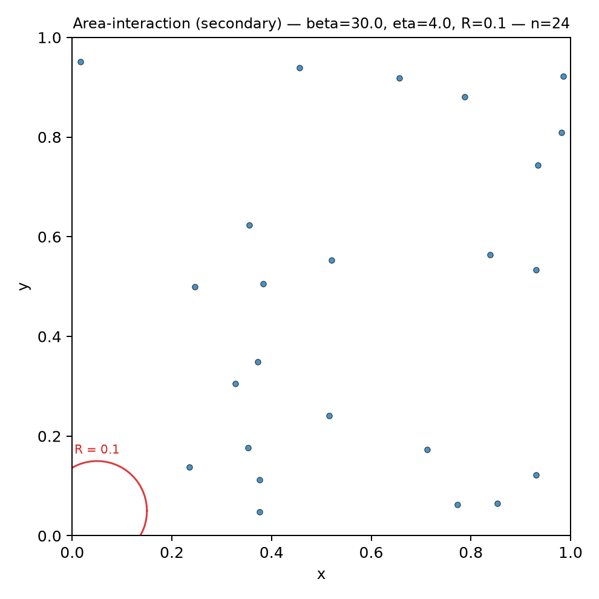
fig3, ax3 = plt.subplots(figsize=(5.5, 5.5))
_plot_scatter_with_radius(
ax3, ai["points"], ai["R"],
f"Area-interaction (secondary) — beta={ai['beta_true']}, "
f"eta={ai['eta_true']}, R={ai['R']} — n={ai['n_data']}",
)Question: Is ictal propagation a genuine traveling wave, or a static hot-spot consistent with an inhomogeneous-Poisson (independent-site) null -- and does the space-time global-rank envelope test correctly separate the two from the same held-out background?
Goal: Answer the clinical question "is ictal propagation a genuine traveling wave, or a static hot-spot consistent with an inhomogeneous-Poisson null?" Confirm the space-time global-rank envelope test correctly fails to reject the static-hot-spot epoch (a true inhomogeneous space-time Poisson process, however spatially concentrated) while rejecting the traveling-wave epoch, using a held-out intensity estimate to avoid plug-in bias -- exactly what a naive per-electrode rate map cannot do, since both epochs produce a similarly concentrated firing-rate footprint.
Simulates a static-hot-spot (inhomogeneous-Poisson, temporally static rate bump) epoch and a traveling-wave (migrating Gaussian intensity bump, drawn by thinning against its own exact peak) epoch on a synthetic 8x8 ECoG grid, fits a held-out :func:`nstat.extras.spatial.intensity_st_kde` from a separate calibration epoch, and tests both epochs with :func:`nstat.extras.spatial.k_st_inhom`, :func:`nstat.extras.spatial.pair_correlation_st`, and :func:`nstat.extras.spatial.global_envelope_st` against the inhomogeneous space-time Poisson null.
Run: python examples/extras/spatial_gof_ecog_demo.py --export-figures · Script
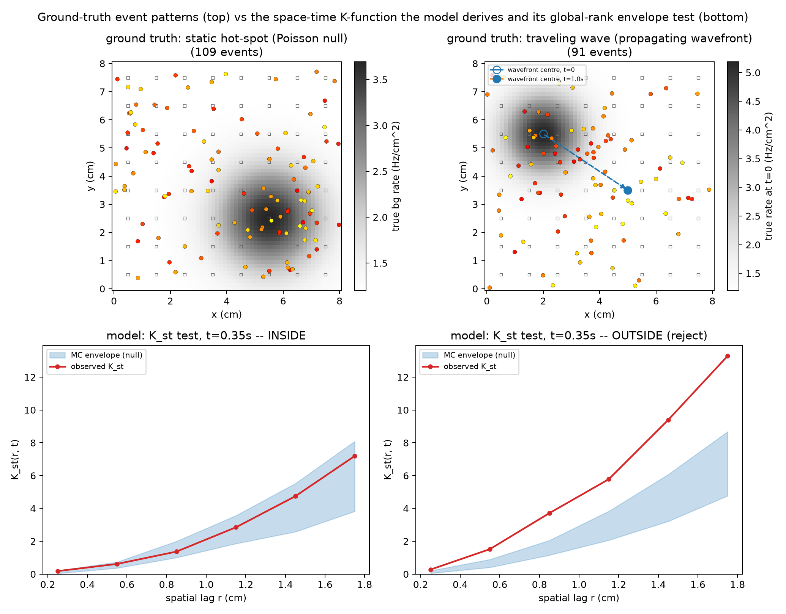
# Top row = the GROUND-TRUTH event patterns each epoch actually produced,
# overlaid on the true rate field. The static-hot-spot column shows a
# time-invariant bump; the traveling-wave column shows the rate field at
# t=0 plus the wavefront's straight-line path to t=T_TEST, with events
# coloured by time so the temporal sweep is visible. Bottom row = the
# space-time K-function the MODEL DERIVES from each pattern, vs the
# Monte-Carlo global-rank envelope of the fitted-background null.
# Reading top-to-bottom shows *why* the test fires: the migrating
# wavefront's space-time-correlated events push its K_st far outside the
# envelope, while the static hot-spot -- however spatially concentrated
# -- stays inside it.
fig1, axes1 = plt.subplots(2, 2, figsize=(11.5, 9.0))
gx = np.linspace(DOMAIN[0][0], DOMAIN[0][1], 60)
gy = np.linspace(DOMAIN[1][0], DOMAIN[1][1], 60)
grid_x, grid_y = np.meshgrid(gx, gy)
grid_xy = np.column_stack([grid_x.ravel(), grid_y.ravel()])
bg_field_hotspot = _background_rate(grid_xy, 0.0).reshape(grid_x.shape)
bg_field_wave = _wave_rate(grid_xy, 0.0).reshape(grid_x.shape)
wave_end = WAVE_START + WAVE_VELOCITY * T_TEST
for col, (res, bg_field) in enumerate(
((baseline, bg_field_hotspot), (wave, bg_field_wave))
):
ax = axes1[0, col]
pcm = ax.pcolormesh(grid_x, grid_y, bg_field, cmap="Greys",
shading="auto", alpha=0.85)
ax.scatter(electrodes[:, 0], electrodes[:, 1], marker="s", s=9,
facecolors="none", edgecolors="0.4", linewidths=0.5)
if res is wave:
ax.annotate(
"", xy=wave_end, xytext=WAVE_START,
arrowprops=dict(arrowstyle="-|>", color="tab:blue",
lw=1.5, ls="--"),
zorder=2,
)
ax.plot(*WAVE_START, marker="o", mfc="none", mec="tab:blue",
ms=8, zorder=2, label="wavefront centre, t=0")
ax.plot(*wave_end, marker="o", mfc="tab:blue", mec="tab:blue",
ms=8, zorder=2, label=f"wavefront centre, t={T_TEST:.1f}s")
ax.legend(loc="upper left", fontsize=6.5)
pts = res["points"]
ax.scatter(pts[:, 0], pts[:, 1], c=res["times"], cmap="autumn", s=18,
edgecolors="k", linewidths=0.2, zorder=3)
ax.set_title(f"ground truth: {res['label']}\n({pts.shape[0]} events)")
ax.set_xlabel("x (cm)")
ax.set_ylabel("y (cm)")
ax.set_aspect("equal")
cbar_label = (
"true rate at t=0 (Hz/cm^2)" if res is wave else "true bg rate (Hz/cm^2)"
)
fig1.colorbar(pcm, ax=ax, fraction=0.046, pad=0.04, label=cbar_label)
k_ymax = max(
float(wave["env"].observed[:, t_idx].max()),
float(wave["env"].hi[:, t_idx].max()),
)
for col, res in enumerate((baseline, wave)):
ax = axes1[1, col]
env = res["env"]
ax.fill_between(
R_GRID, env.lo[:, t_idx], env.hi[:, t_idx],
color="tab:blue", alpha=0.25, label="MC envelope (null)",
)
ax.plot(R_GRID, env.observed[:, t_idx], color="tab:red", lw=1.8,
marker="o", ms=4, label="observed K_st")
verdict = "INSIDE" if env.inside else "OUTSIDE (reject)"
ax.set_title(f"model: K_st test, t={T_GRID[t_idx]:.2f}s -- {verdict}")
ax.set_xlabel("spatial lag r (cm)")
ax.set_ylabel("K_st(r, t)")
ax.set_ylim(0.0, k_ymax * 1.05)
ax.legend(loc="upper left", fontsize=8)
fig1.suptitle(
"Ground-truth event patterns (top) vs the space-time K-function the "
"model derives and its global-rank envelope test (bottom)"
)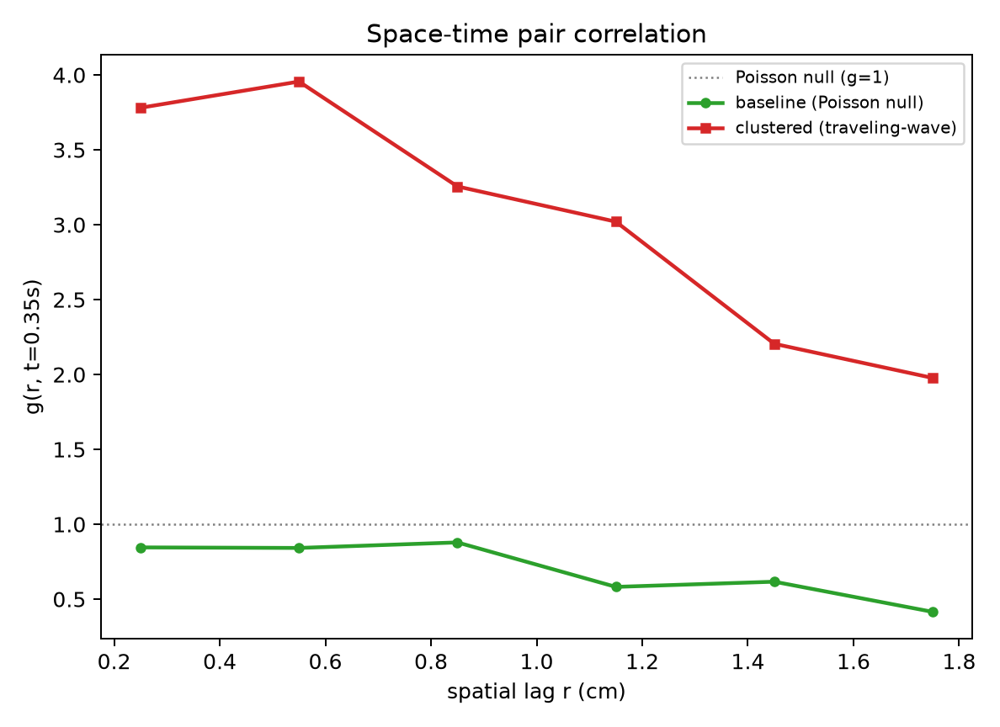
fig2, ax2 = plt.subplots(figsize=(6.6, 4.8))
ax2.axhline(1.0, color="gray", lw=1.0, ls=":", label="Poisson null (g=1)")
ax2.plot(R_GRID, baseline["g_st"][:, t_idx], color="tab:green", lw=1.8,
marker="o", ms=4, label=baseline["label"])
ax2.plot(R_GRID, wave["g_st"][:, t_idx], color="tab:red", lw=1.8,
marker="s", ms=4, label=wave["label"])
ax2.set_xlabel("spatial lag r (cm)")
ax2.set_ylabel(f"g(r, t={T_GRID[t_idx]:.2f}s)")
ax2.set_title("Space-time pair correlation")
ax2.legend(loc="upper right", fontsize=8)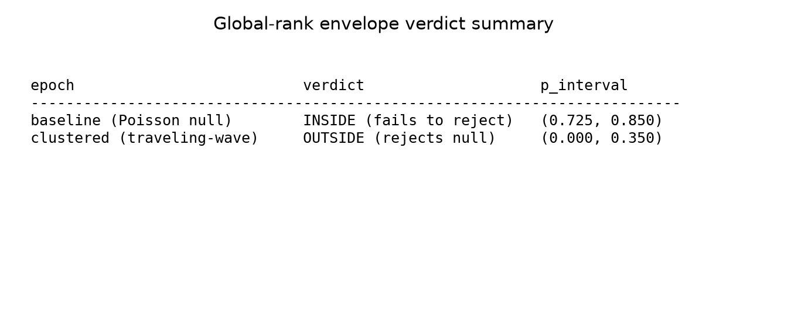
fig3, ax3 = plt.subplots(figsize=(7.5, 3.0))
ax3.axis("off")
lines = ["epoch verdict p_interval",
"-" * 82]
for res in (baseline, wave):
env = res["env"]
verdict = "INSIDE (fails to reject)" if env.inside else "OUTSIDE (rejects null)"
lines.append(
f"{res['label']:38s} {verdict:26s} "
f"({env.p_interval[0]:.3f}, {env.p_interval[1]:.3f})"
)
ax3.text(
0.02, 0.85, "\n".join(lines), family="monospace", fontsize=10,
va="top", transform=ax3.transAxes,
)
ax3.set_title("Global-rank envelope verdict summary")Question: How much seizure activity is tonic background (a hyperexcitable seizure-onset zone, the clinical "penumbra") vs. self-excited recruitment (the actively-recruited ictal "core")? Do branching EM (homogeneous background) and the Cox-Hawkes alternating estimator (inhomogeneous LGCP background) recover the true recruitment kernel and separate core from penumbra activity on synthetic ECoG catalogues?
Goal: Confirm branching EM and the Cox-Hawkes alternating estimator both recover the true spatial (sigma_space) and temporal (1/c) core-recruitment scales, and that Cox-Hawkes correctly separates the spatially-varying penumbra (hyperexcitable seizure-onset-zone background) from the core self-excitation riding on top of it.
Reframes the space-time Hawkes / Cox-Hawkes background-excitation decomposition as the clinical seizure "core" (self-exciting recruitment cascade) vs. "penumbra" (tonic background) split described by Schevon et al. (2012); both catalogues below recover that same within-recording core/penumbra split and differ only in the background model. Simulates a homogeneous-background catalogue with :func:`nstat.extras.spatial.simulate_spatial_hawkes` and recovers ``(mu, K_branch, c, sigma_space)`` -- the core-cascade kernel plus a per-event core/penumbra declustering -- with :func:`nstat.extras.spatial.em_spatial_hawkes`, then simulates a second catalogue with an inhomogeneous LGCP background anchored at a fixed hyperexcitable seizure-onset zone via :func:`nstat.extras.spatial.simulate_cox_hawkes` and recovers the core/penumbra decomposition with :func:`nstat.extras.spatial.fit_cox_hawkes`, both on a synthetic 8x8 ECoG grid over multi-minute continuous epochs. Presents Cox-Hawkes applied to the epilepsy core/penumbra decomposition as a methodological opportunity -- not a result from any published epilepsy study.
Run: python examples/extras/spatial_hawkes_ecog_demo.py --export-figures · Script
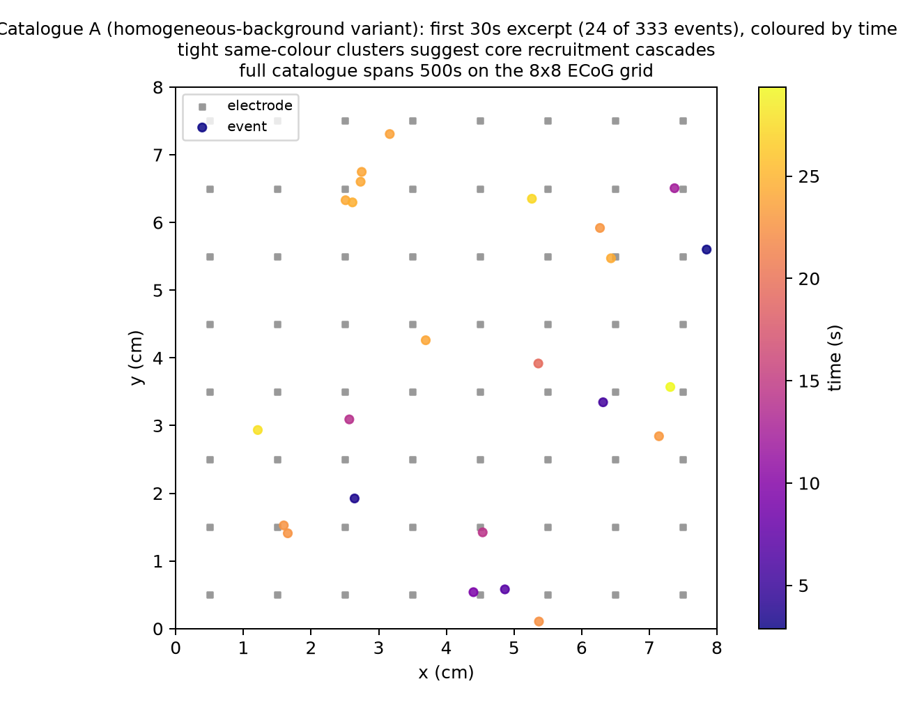
# A short excerpt (not the full multi-minute catalogue) is shown,
# coloured by elapsed time, so that visually tight temporal clusters
# -- suggestive of individual recruitment cascades building a "core"
# -- stand out against the sparser, scattered "penumbra" background
# events. Colour encodes time only, not P(background), so a tight
# cluster is suggestive of a cascade, not proof of one (temporally
# close background events can look the same).
excerpt_s = 30.0
excerpt_mask = t_a <= excerpt_s
fig1, ax1 = plt.subplots(figsize=(7.2, 5.6))
ax1.scatter(
electrodes[:, 0], electrodes[:, 1],
marker="s", s=10, color="0.6", zorder=1, label="electrode",
)
sc = ax1.scatter(
pts_a[excerpt_mask, 0], pts_a[excerpt_mask, 1], c=t_a[excerpt_mask],
s=22, cmap="plasma", alpha=0.85, zorder=2, label="event",
)
fig1.colorbar(sc, ax=ax1, label="time (s)")
ax1.set_xlim(*DOMAIN[0])
ax1.set_ylim(*DOMAIN[1])
ax1.set_aspect("equal")
ax1.set_xlabel("x (cm)")
ax1.set_ylabel("y (cm)")
ax1.set_title(
f"Catalogue A (homogeneous-background variant): first "
f"{excerpt_s:.0f}s excerpt ({int(excerpt_mask.sum())} of "
f"{pts_a.shape[0]} events), coloured by time\n"
f"tight same-colour clusters suggest core recruitment cascades\n"
f"full catalogue spans {T_A:.0f}s on the {N_SIDE}x{N_SIDE} ECoG grid",
fontsize=10,
)
ax1.legend(loc="upper left", fontsize=8)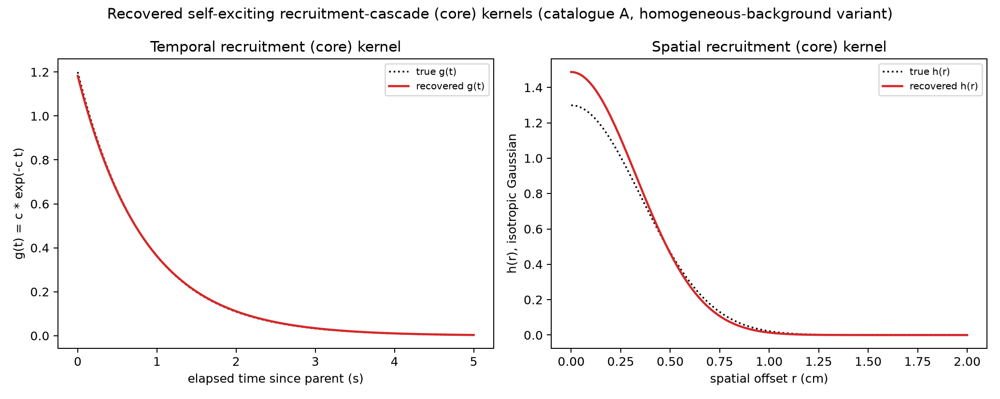
fig2, (ax2a, ax2b) = plt.subplots(1, 2, figsize=(11.5, 4.6))
t_grid = np.linspace(0.0, 5.0, 200)
ax2a.plot(t_grid, C_TRUE * np.exp(-C_TRUE * t_grid), color="black", lw=1.4,
ls=":", label="true g(t)")
ax2a.plot(
t_grid, fit_a.c_hat * np.exp(-fit_a.c_hat * t_grid), color="tab:red",
lw=1.8, label="recovered g(t)",
)
ax2a.set_xlabel("elapsed time since parent (s)")
ax2a.set_ylabel("g(t) = c * exp(-c t)")
ax2a.set_title("Temporal recruitment (core) kernel")
ax2a.legend(loc="upper right", fontsize=8)
r_grid = np.linspace(0.0, 2.0, 200)
h_true = np.exp(-r_grid**2 / (2 * SIGMA_SPACE_TRUE**2)) / (
2 * np.pi * SIGMA_SPACE_TRUE**2
)
h_hat = np.exp(-r_grid**2 / (2 * fit_a.sigma_space_hat**2)) / (
2 * np.pi * fit_a.sigma_space_hat**2
)
ax2b.plot(r_grid, h_true, color="black", lw=1.4, ls=":", label="true h(r)")
ax2b.plot(r_grid, h_hat, color="tab:red", lw=1.8, label="recovered h(r)")
ax2b.set_xlabel("spatial offset r (cm)")
ax2b.set_ylabel("h(r), isotropic Gaussian")
ax2b.set_title("Spatial recruitment (core) kernel")
ax2b.legend(loc="upper right", fontsize=8)
fig2.suptitle(
"Recovered self-exciting recruitment-cascade (core) kernels "
"(catalogue A, homogeneous-background variant)"
)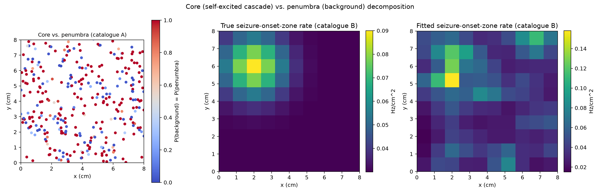
fig3, axes3 = plt.subplots(1, 3, figsize=(15.5, 5.0))
resp_diag = np.asarray(fit_a.responsibilities.diagonal()) if (
fit_a.responsibilities is not None
) else np.full(pts_a.shape[0], np.nan)
sc3 = axes3[0].scatter(
pts_a[:, 0], pts_a[:, 1], c=resp_diag, s=18, cmap="coolwarm",
vmin=0.0, vmax=1.0,
)
fig3.colorbar(sc3, ax=axes3[0], label="P(background) = P(penumbra)")
axes3[0].set_xlim(*DOMAIN[0])
axes3[0].set_ylim(*DOMAIN[1])
axes3[0].set_aspect("equal")
axes3[0].set_xlabel("x (cm)")
axes3[0].set_ylabel("y (cm)")
axes3[0].set_title("Core vs. penumbra (catalogue A)", fontsize=10)
# Displayed in physical cm units for readability (see the DOMAIN_B note):
# rate density lambda_cm = lambda_unit / GRID_EDGE_CM^2, x_cm = x_unit * GRID_EDGE_CM.
Gx_l, Gy_l, _ = LGCP_GRID
grid_x_bg = fit_b.background.grid_x
true_bg_vals = _cox_background_rate(grid_x_bg, np.zeros(grid_x_bg.shape[0]))
true_bg_vals_cm = true_bg_vals / GRID_EDGE_CM**2
cm_extent = (0.0, GRID_EDGE_CM, 0.0, GRID_EDGE_CM)
im_true = axes3[1].imshow(
true_bg_vals_cm.reshape(Gy_l, Gx_l), origin="lower", cmap="viridis",
extent=cm_extent, aspect="equal",
)
axes3[1].set_xlabel("x (cm)")
axes3[1].set_ylabel("y (cm)")
axes3[1].set_title("True seizure-onset-zone rate (catalogue B)")
fig3.colorbar(im_true, ax=axes3[1], fraction=0.046, pad=0.04, label="Hz/cm^2")
mean_bg, _lo_bg, _hi_bg = fit_b.background.rate_map(T_B / 2.0, level=0.9)
mean_bg_cm = mean_bg / GRID_EDGE_CM**2
im_fit = axes3[2].imshow(
mean_bg_cm.reshape(Gy_l, Gx_l), origin="lower", cmap="viridis",
extent=cm_extent, aspect="equal",
)
axes3[2].set_xlabel("x (cm)")
axes3[2].set_ylabel("y (cm)")
axes3[2].set_title("Fitted seizure-onset-zone rate (catalogue B)")
fig3.colorbar(im_fit, ax=axes3[2], fraction=0.046, pad=0.04, label="Hz/cm^2")
fig3.suptitle("Core (self-excited cascade) vs. penumbra (background) decomposition")Question: Can the space-time kernel intensity estimate and the spatiotemporal LGCP posterior mean (with credible bands) recover a spreading-depolarisation / seizure wavefront's trajectory and propagation speed on a Utah-style microelectrode array, without fitting a parametric wave model?
Goal: Confirm both the space-time kernel intensity estimate and the Kronecker-Laplace spatiotemporal LGCP posterior mean track a propagating spreading-depolarisation / seizure wavefront across a realistic electrode-array footprint, that the LGCP credible band widens away from the well-sampled wavefront, and that a line fit through the recovered peak trajectory recovers the true propagation speed to within tolerance.
Simulates a Gaussian population-rate wavefront -- a synthetic spreading-depolarisation / seizure wavefront -- translating across a 10x10 Utah-style microelectrode array at a realistic ictal-front speed (~1.9 mm/s) over a short recording epoch, then fits :func:`nstat.extras.spatial.intensity_st_kde` and :func:`nstat.extras.spatial.lgcp_st_fit` and compares the true, KDE-estimated, and LGCP-estimated wavefront centroid (with credible bands from :meth:`nstat.extras.spatial.LGCPSTResult.rate_map`) at several time slices, plus a recovered-vs-true propagation-speed readout from a line fit through the recovered peak trajectory.
Run: python examples/extras/spatial_stlgcp_microelectrode_demo.py --export-figures · Script
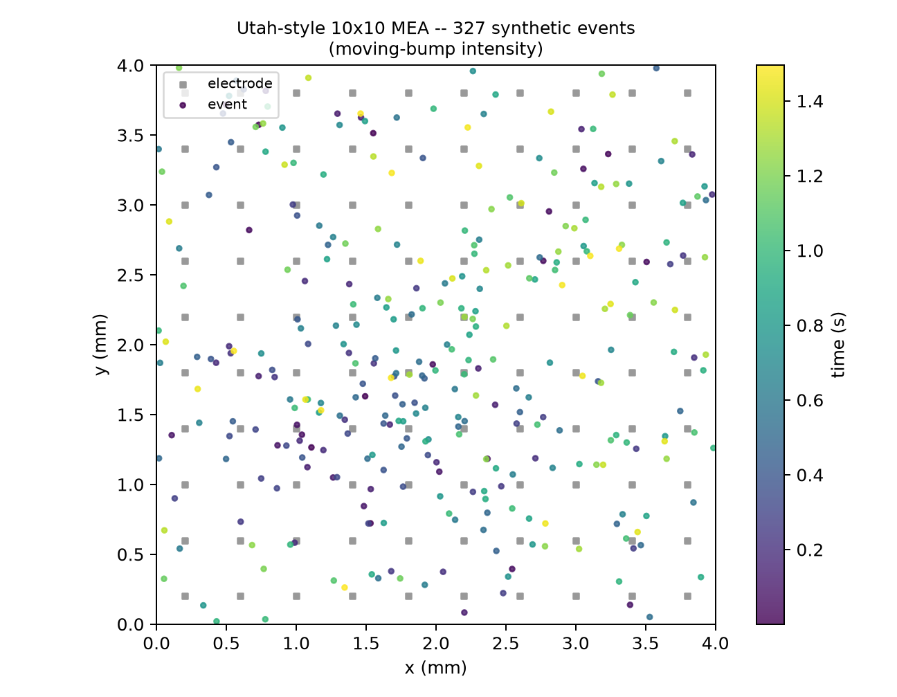
fig1, ax1 = plt.subplots(figsize=(7.2, 5.6))
ax1.scatter(
electrodes[:, 0], electrodes[:, 1],
marker="s", s=10, color="0.6", zorder=1, label="electrode",
)
sc = ax1.scatter(
points[:, 0], points[:, 1], c=times, s=8, cmap="viridis",
alpha=0.8, zorder=2, label="event",
)
fig1.colorbar(sc, ax=ax1, label="time (s)")
ax1.set_xlim(*DOMAIN[0])
ax1.set_ylim(*DOMAIN[1])
ax1.set_aspect("equal")
ax1.set_xlabel("x (mm)")
ax1.set_ylabel("y (mm)")
ax1.set_title(
f"Utah-style {N_SIDE}x{N_SIDE} MEA -- {n} synthetic events\n"
"(spreading-depolarisation / seizure wavefront)",
fontsize=10,
)
ax1.legend(loc="upper left", fontsize=8)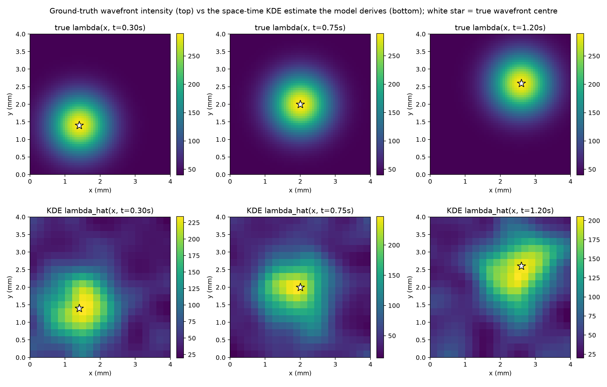
# Top row = the GROUND-TRUTH wavefront intensity field at each slice;
# bottom row = the space-time KDE estimate the model DERIVES from the
# observed events alone. The white star marks the true wavefront centre
# in both rows, so the reader can check that the estimated hot-spot
# tracks the truth as the wavefront sweeps across the array.
tf_x = np.linspace(DOMAIN[0][0], DOMAIN[0][1], 60)
tf_y = np.linspace(DOMAIN[1][0], DOMAIN[1][1], 60)
tf_gx, tf_gy = np.meshgrid(tf_x, tf_y)
tf_pts = np.column_stack([tf_gx.ravel(), tf_gy.ravel()])
fig2, axes2 = plt.subplots(2, 3, figsize=(13.5, 8.6))
for col, (t_query, row) in enumerate(zip(slice_times, recovery_rows)):
tc = row["true_center"]
ax_true = axes2[0, col]
true_field = _true_intensity(tf_pts, t_query).reshape(tf_gx.shape)
im_t = ax_true.imshow(
true_field, origin="lower", cmap="viridis",
extent=(*DOMAIN[0], *DOMAIN[1]), aspect="equal",
)
ax_true.plot(tc[0], tc[1], marker="*", color="white", ms=14, mec="black")
ax_true.set_title(f"true lambda(x, t={t_query:.2f}s)")
ax_true.set_xlabel("x (mm)")
ax_true.set_ylabel("y (mm)")
fig2.colorbar(im_t, ax=ax_true, fraction=0.046, pad=0.04)
ax_kde = axes2[1, col]
idx = int(np.argmin(np.abs(kde.grid_t - t_query)))
img = kde.intensity[idx].reshape(Gy_kde, Gx_kde)
im_k = ax_kde.imshow(
img, origin="lower", cmap="viridis", extent=(*DOMAIN[0], *DOMAIN[1]),
aspect="equal",
)
ax_kde.plot(tc[0], tc[1], marker="*", color="white", ms=14, mec="black")
ax_kde.set_title(f"KDE lambda_hat(x, t={t_query:.2f}s)")
ax_kde.set_xlabel("x (mm)")
ax_kde.set_ylabel("y (mm)")
fig2.colorbar(im_k, ax=ax_kde, fraction=0.046, pad=0.04)
fig2.suptitle(
"Ground-truth wavefront intensity (top) vs the space-time KDE "
"estimate the model derives (bottom); white star = true wavefront centre"
)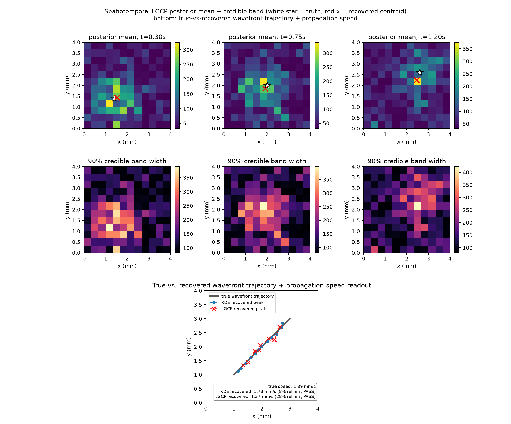
# Rows 1-2 (unchanged): LGCP posterior mean + credible-band snapshots.
# Row 3 (new): the true-vs-recovered wavefront trajectory in the (x, y)
# plane, spanning the full trial -- not just the 3 snapshot times above
# -- with the recovered-vs-true propagation-speed readout annotated.
Gy_l, Gx_l = 12, 12
fig3 = plt.figure(figsize=(13.5, 11.2))
gs3 = fig3.add_gridspec(
3, 3, height_ratios=(1.0, 1.0, 1.3), hspace=0.4, top=0.90, bottom=0.05
)
for col, (t_query, row) in enumerate(zip(slice_times, recovery_rows)):
mean, lo, hi = lgcp.rate_map(t_query, level=0.9)
band_width = hi - lo
tc = row["true_center"]
ax_mean = fig3.add_subplot(gs3[0, col])
im0 = ax_mean.imshow(
mean.reshape(Gy_l, Gx_l), origin="lower", cmap="viridis",
extent=(*DOMAIN[0], *DOMAIN[1]), aspect="equal",
)
ax_mean.plot(tc[0], tc[1], marker="*", color="white", ms=14, mec="black")
ax_mean.plot(
row["lgcp_center"][0], row["lgcp_center"][1],
marker="x", color="red", ms=10, mew=2,
)
ax_mean.set_title(f"posterior mean, t={t_query:.2f}s")
ax_mean.set_xlabel("x (mm)")
ax_mean.set_ylabel("y (mm)")
fig3.colorbar(im0, ax=ax_mean, fraction=0.046, pad=0.04)
ax_band = fig3.add_subplot(gs3[1, col])
im1 = ax_band.imshow(
band_width.reshape(Gy_l, Gx_l), origin="lower", cmap="magma",
extent=(*DOMAIN[0], *DOMAIN[1]), aspect="equal",
)
ax_band.set_title("90% credible band width")
ax_band.set_xlabel("x (mm)")
ax_band.set_ylabel("y (mm)")
fig3.colorbar(im1, ax=ax_band, fraction=0.046, pad=0.04)
ax_traj = fig3.add_subplot(gs3[2, :])
t_fine = np.linspace(PERIOD[0], PERIOD[1], 200)
true_fine = _bump_center(t_fine)
ax_traj.plot(
true_fine[:, 0], true_fine[:, 1], color="0.35", lw=2.5, zorder=1,
label="true wavefront trajectory",
)
ax_traj.plot(
kde_traj_c[:, 0], kde_traj_c[:, 1], marker="o", ms=5, lw=1.0,
ls="--", color="tab:blue", zorder=2, label="KDE recovered peak",
)
ax_traj.plot(
lgcp_traj_c[:, 0], lgcp_traj_c[:, 1], marker="x", ms=7, mew=1.5,
lw=1.0, ls="--", color="red", zorder=2, label="LGCP recovered peak",
)
ax_traj.set_xlim(*DOMAIN[0])
ax_traj.set_ylim(*DOMAIN[1])
ax_traj.set_aspect("equal")
ax_traj.set_xlabel("x (mm)")
ax_traj.set_ylabel("y (mm)")
ax_traj.set_title(
"True vs. recovered wavefront trajectory + propagation-speed readout"
)
ax_traj.legend(loc="upper left", fontsize=8)
speed_text = (
f"true speed: {TRUE_SPEED_MM_S:.2f} mm/s\n"
f"KDE recovered: {kde_speed:.2f} mm/s "
f"({kde_speed_rel_err * 100:.0f}% rel. err, "
f"{'PASS' if kde_speed_ok else 'FAIL'})\n"
f"LGCP recovered: {lgcp_speed:.2f} mm/s "
f"({lgcp_speed_rel_err * 100:.0f}% rel. err, "
f"{'PASS' if lgcp_speed_ok else 'FAIL'})"
)
ax_traj.text(
0.98, 0.03, speed_text, transform=ax_traj.transAxes,
ha="right", va="bottom", fontsize=8,
bbox=dict(boxstyle="round", fc="white", ec="0.5", alpha=0.9),
)
fig3.suptitle(
"Spatiotemporal LGCP posterior mean + credible band (white star ="
" truth, red x = recovered centroid)\nbottom: true-vs-recovered"
" wavefront trajectory + propagation speed",
fontsize=11,
)Question: Does refitting the identical design matrix of a reach-tuned motor-cortex encoding GLM -- an instance of the point-process Poisson-GLM encoding family (Weber & Pillow 2017 show GLMs of this form reproduce diverse single-neuron response dynamics) -- in a second, independently-maintained implementation -- ``nemos.glm.GLM`` -- recover the same coefficients as ``nstat.fit_poisson_glm``, the reviewer-grade rigor check a clinical encoding-model paper's tuning claims would need?
Goal: The reviewer-grade numerical cross-check a clinical encoding-model paper's tuning-coefficient claims would need: refitting the identical design matrix in a second, independently-maintained implementation (NeMoS -- a JAX-backed GLM toolbox from the Flatiron Institute Center for Computational Neuroscience, using optax first-order optimisation, unlike nstat's IRLS) and confirming the two converge on the same optimum within ``atol``.
Generates a synthetic Poisson GLM fixture (n=1000, p=3) standing in for a reach-tuned motor-cortex unit -- a single-unit firing rate driven by reach-kinematic covariates through a log-linear Poisson GLM, an instance of the point-process Poisson-GLM encoding family (Weber & Pillow 2017 show GLMs of this form reproduce diverse single-neuron response dynamics) -- with known intercept and coefficients, fits the same model with ``nstat.fit_poisson_glm`` and ``nemos.glm.GLM``, and reports the coefficient agreement via the :meth:`GLMComparison.assert_agree` regression-guard hook.
Run: python examples/extras/validation_nemos_demo.py · Script
Question: Does the clinical workhorse velocity Kalman decoder (Wu 2006; Malik et al. 2011) replicate across independent implementations, and how does its decode accuracy degrade under chronic per-unit drift (Perge et al. 2013) and unit turnover (Downey et al. 2018) — and is periodic recalibration what restores it?
Goal: Show that the clinical velocity Kalman decoder's numerics replicate across independent implementations (the ``assert_filtered_agree`` regression guard), and that its real vulnerability in a chronic intracortical BCI is not the algorithm but the nonstationary population underneath it: a decoder frozen at Day-0 calibration decodes a steadily worsening velocity correlation coefficient as per-unit drift and unit turnover accumulate, while a decoder periodically recalibrated from a brief same-day calibration block holds its accuracy close to Day-0 levels throughout -- illustrating why periodic recalibration, not decoder architecture alone, is what keeps a chronic BCI clinically usable session after session.
Part 1 (requires the optional ``pykalman`` dependency): a synthetic 14-unit M1 velocity-encoding population (Wu, Gao, Bienenstock, Donoghue & Black 2006) drives a 2-state ``(v_x, v_y)`` linear-Gaussian fixture over 100 time bins -- the same clinical workhorse decoder whose steady-state form Malik, Truccolo, Brown & Hochberg (2011) deploy in a human neural interface system. nstat's ``DecodingAlgorithms.kalman_filter``/``kalman_smoother`` and ``pykalman.KalmanFilter`` filter/smooth the same simulated activity, surfacing the documented ~3.7e-3 filtered-mean disagreement (``t=0`` initialisation convention) via :meth:`KalmanComparison.assert_filtered_agree`. Gracefully skipped (not a failure) when ``pykalman`` is absent. Part 2 (pure NumPy/SciPy, always runs, no optional dependency): a 24-unit M1 population is calibrated once on Day 0, then decoded with nstat's own Kalman filter across 15 simulated recording days under two documented chronic-recording nonstationarities -- per-unit gain/baseline random-walk drift (Perge, Homer, Malik, Cash, Eskandar, Friehs, Donoghue & Hochberg 2013) and unit turnover (Downey, Schwed, Chase, Schwartz & Collinger 2018) -- with and without recalibrating every 5 days from a short same-day calibration block.
Run: python examples/extras/validation_pykalman_demo.py --export-figures · Script
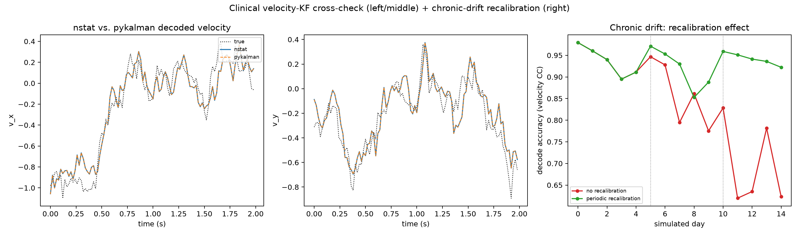
fig, (ax0, ax1, ax2) = plt.subplots(1, 3, figsize=(15.5, 4.6))
t_axis = np.arange(T_XVAL) * DT
for ax, dim, label in ((ax0, 0, "v_x"), (ax1, 1, "v_y")):
ax.plot(t_axis, agreement["v_true"][:, dim], color="black", lw=1.0, ls=":",
label="true" if dim == 0 else None)
if agreement["nstat_filtered"] is not None:
ax.plot(t_axis, agreement["nstat_filtered"][:, dim], color="tab:blue", lw=1.4,
label="nstat" if dim == 0 else None)
if agreement["pykalman_filtered"] is not None:
ax.plot(t_axis, agreement["pykalman_filtered"][:, dim], color="tab:orange",
lw=1.0, ls="--", label="pykalman" if dim == 0 else None)
elif agreement["nstat_filtered"] is None:
ax.text(0.5, 0.03, "agreement check unavailable", transform=ax.transAxes,
ha="center", fontsize=8, color="gray")
else:
ax.text(0.5, 0.03, "pykalman not installed", transform=ax.transAxes,
ha="center", fontsize=8, color="gray")
ax.set_xlabel("time (s)")
ax.set_ylabel(label)
ax0.set_title("nstat vs. pykalman decoded velocity")
ax0.legend(fontsize=7, loc="upper right")
days = np.arange(N_DAYS)
ax2.plot(days, drift["acc_no_recal"], color="tab:red", marker="o", ms=4,
label="no recalibration")
ax2.plot(days, drift["acc_recal"], color="tab:green", marker="o", ms=4,
label="periodic recalibration")
for d in drift["recal_days"]:
if d > 0:
ax2.axvline(d, color="gray", ls=":", lw=0.8)
ax2.set_xlabel("simulated day")
ax2.set_ylabel("decode accuracy (velocity CC)")
ax2.set_title("Chronic drift: recalibration effect")
ax2.legend(fontsize=7, loc="lower left")
fig.suptitle(
"Clinical velocity-KF cross-check (left/middle) + chronic-drift "
"recalibration (right)"
)Question: Does refitting the identical spike-encoding design matrix with statsmodels (Seabold & Perktold 2010) -- an independent, general-purpose reference implementation that, like nstat, fits the Poisson GLM by IRLS -- recover the same coefficients, catching any silent regression in nstat's own IRLS path?
Goal: The regression guard for a clinical encoding model: pin the IRLS-vs-IRLS Poisson-GLM agreement between nstat and statsmodels (Seabold & Perktold 2010, Proc. 9th Python in Science Conf., pp. 92-96 — the statsmodels software paper, cited here for statsmodels as an independent, general-purpose reference GLM implementation, not as a neuroscience source) at near machine precision, so any silent regression in nstat's own IRLS path is caught immediately.
Generates the same synthetic spike-encoding Poisson-GLM fixture as the NeMoS demo -- a synthetic unit's known encoding coefficients driving spike counts through a log-linear Poisson GLM -- fits with both ``nstat.fit_poisson_glm`` and ``statsmodels.api.GLM`` (Poisson family, Seabold & Perktold 2010), and reports the coefficient agreement. Because both fitters solve the Poisson GLM by IRLS, the synthetic-fixture agreement is ~1e-9 — the tightest cross-validation oracle in :mod:`nstat.extras.validation`.
Run: python examples/extras/validation_statsmodels_demo.py · Script